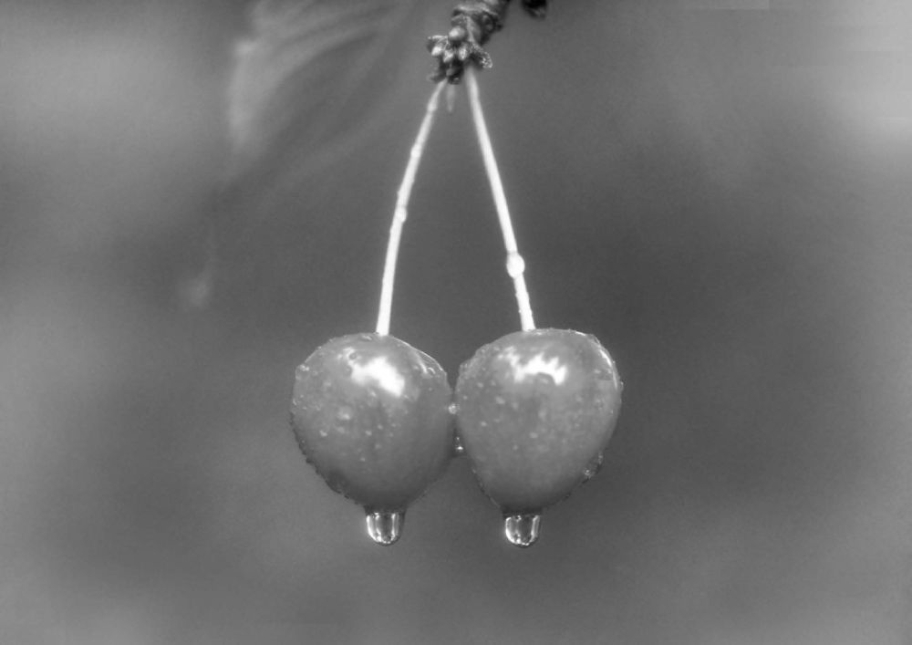
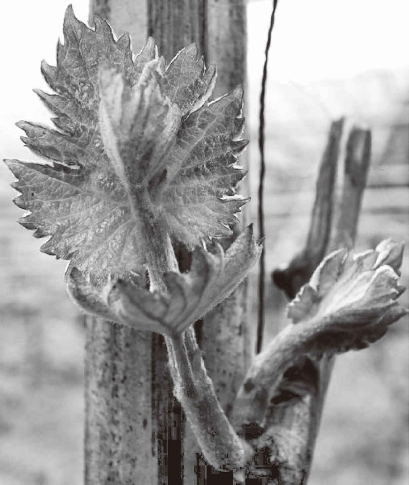

第十一章
论芽变，论繁殖和变异的某些变常方式
由变异了的果实所表明的桃、李、樱桃、葡萄、醋栗、穗状醋栗、香蕉的芽变——花卉植物：山茶花、落叶杜鹃花、菊花、蔷薇等的芽变——香石竹的颜色变化——在叶上所表现的芽变——由吸根、块茎、鳞茎所发生的变异——郁金香的变色——由生活条件所引起的芽变的逐渐变化——嫁接杂种——由芽变所引起的实生杂种中的亲代性状的分离——异花粉对于母本的直接作用——雌性动物的前受胎对于以后的后代的影响——结论和提要

樱桃。
这一章主要用来讨论在许多方面都是重要的一个问题，即芽变。我把那些在充分成熟植物的花芽和叶芽中偶尔发生的构造上和外观上的突然变化都包括在这一术语之中。艺园者把这等变化叫做奇变（sports）；但是，像前面所说的那样，这是一个很不明确的名词，因为它常常应用于实生植物中的特征显著的变异。种子繁殖和芽繁殖之间的差异并不像初看起来那么大；因为在某种意义上来说，每一个芽就是一个新而不同的个体；但这等个体是在不受任何器官的帮助之下，通过各个种类的芽的形成而被产生出来的，而能稔的种子却是由于两种生殖质的结合而被产生出来的。由芽变所引起的变异一般在任何程度上都能够用枝接、芽接、扦插和鳞茎等来繁殖的，而且偶尔甚至能够用种子来繁殖。某些少数最美丽的和最有用的植物是由芽变而发生的。
到现在只在植物界中观察到芽变；但是，群栖动物，如珊瑚，假如长久处于家养之下，它们大概也会由芽而发生变异；因为它们在许多方面都同植物类似。例如一种群栖动物所表现的任何新的或特殊的性状都是由芽繁殖的；不同颜色的水螅（Hydra），以及高斯（Gosse）先生所曾示明的真正珊瑚的一个奇异变种，就是这样。水螅的一个变种也曾被接在另一变种上，而且保持了它们的性状。
我首先将叙述我所能搜集的有关芽变的所有例子，然后再指出它们的重要性[1]。这些例子证明了像帕拉斯先生那样的一些作者们的错误，因为他们把一切变异都归因于不同族的或者属于同族而彼此多少有些差异的不同个体的杂交；而且也证明了另外一些作者们的错误，他们把一切变异都归因于两性结合的作用。我们还不能在所有场合里都用返归常久亡失的祖代性状的原理来解释通过芽变所出现的新性状。谁如果愿意去判断生活条件在直接引起各个特殊变异上有多大作用，他就应当仔细推敲一下即将提出的事例。我首先要叙述的是在果实上所表现的芽变，其次谈一谈花，最后再谈一谈叶子。
桃（Amygdalus persica） 关于桃-扁桃和重瓣花扁桃突然产生了密切类似真桃的果实，我在上一章举出了两个例子。关于桃树的芽发展成枝条之后，产生了油桃，我也举出了许多例子。我们已经看到，6个已被命名的和几个未被命名的桃变种就这样产生了油桃变种。我曾阐明以下的情形是高度不可能的：那就是，所有这些桃树（其中有些是古老的变种，而且曾被繁殖过无数次）都是桃和油桃的杂种；并且我也曾阐明以下的情形是完全不合乎道理的：那就是，把桃树上偶尔产生油桃的事情归因于来自某种邻近油桃树的花粉所发生的直接作用。其中有几种情形是高度值得注意的：第一，因为这样产生出来的果实有时一部分是油桃、一部分是桃；第二，因为这样突然产生出来的油桃曾经由种子繁殖了自己；第三，因为用种子以及用芽都可由桃树产生油桃。另一方面，油桃的种子偶尔也产生桃；而且我们在一个事例中曾经看到一株油桃树由于芽变而产生了桃。因为桃肯定是最古老的、即原始的变种，所以从油桃产生出来桃，无论是用种子或者用芽，恐怕都可以看做是一种返祖的情形。还有某些树被描述为可以产生桃也可以产生油桃，这大概可以看做是极度的芽变。
蒙特洛伊（Montreuil）的大型深红桃（grosse mignonne peach）由一个芽变枝产生了晚熟深红桃（grosse mignonne tardive），这是一个最优良的变种，它的果实成熟期比亲本树要晚两周，但是同等的好[2]。同一种桃树由于芽变也产生过早熟深红桃（early grosse mignonne）。亨特大型黄褐色油桃（Hunt's large tawny nectarine）是从亨特小型黄褐色油桃产生出来的，但不是通过种子繁殖的[3]。
李（plums） 奈特先生说，一株生长40年的、总是结生正常果实的黄色大型美李（magnum bonums plum）长出一个枝条，它产生了红色大型美李[4]。骚勃赖季沃茨的利威尔先生告诉我说（1863年1月），紫色种类的早熟丰产李（early prolific plum）是由一个结生紫色果实的古老法国变种传下来的，在它的400株或500株树中，只有一株在十年生时产生了非常鲜艳的黄色李；除了颜色以外，它同其他树的果实毫无不同之处，但是它同任何其他已知的黄色种类的李并不相似[5]。
樱桃（Prunus cerasus） 奈特先生曾经记载过（同前书）一种情形：“五月公爵”（May-Duke）樱桃的一个枝条，虽然肯定从未嫁接过，但它的果实总是比其他枝条上的果实成熟较晚而且形状较长。关于在苏格兰的两株五月公爵樱桃树，有过另一项记载：在它们的枝条上所结的长椭圆形的和很优良的果实，像奈特所说的情形那样，永远比其他樱桃晚熟两周[6]。卡瑞埃尔举出过无数的相似情形（第37页），而且有一株树结生三个种类的果实。
葡萄（Vitis vinifera） 黑色或紫色弗朗提南（Frontignan）在一种场合下连续两年地（无疑是永久地）产生了结有白色弗朗提南葡萄的芽条。在另一种场合下，在同一果柄上，下面的浆果是“完全黑色的‘弗朗提南’；靠着果柄的浆果，除了一个黑色的和有条纹的之外，都是白色的”；在那个同一果柄上，一共有15个黑色的和12个白色的浆果。另一种类的葡萄在同一果柄上产生了黑色的和琥珀色的浆果[7]。奥达特伯爵描述过一个变种，它在同一果柄上经常结生小而圆的和大而长椭圆的浆果；虽然说浆果的形状一般是一种固定的性状[8]。最优秀的权威者卡瑞埃尔提出过另一个显著的例子[9]：“一株黑色汉堡（Hamberg）葡萄（佛兰肯特尔，Frankenthal）被伐倒了，它产生了三个吸根；其中之一被压在地上，不久产生了远比普通浆果为小的浆果，而其成熟期总是比其他浆果至少早两周。在其余的两个吸根中，有一个每年产生优美的葡萄，而其他的一个虽然可以产生大量的果实，但只有少数能成熟，这些成熟的果实的品质也是低劣的。”
醋栗（Ribes grossularia） 林德雷博士[10]描述过一个值得注意的情形；有一株醋栗同时结有不下四个种类的浆果，即红色而多毛的——红色、小形而光滑的——绿色的——杂有浅黄的黄色的；后两个种类在香气上和红色浆果有所不同，并且它们的种子是红色的。这株醋栗有三个小枝密切相连；第一个小枝结有三个黄色的和一个红色的浆果；第二个小枝结有四个黄色的和一个红色的浆果；第三个小枝结有四个红色的和一个黄色的浆果。拉克斯东（Laxton）先生还告诉我说，他看见过一株红色华铃东（Red Warrington）醋栗在同一枝条上结有红色的和黄色的果实。
穗状醋栗（Ribes rubrum） 有一株穗状醋栗是作为香槟（champagne）而被买来的，香槟是一个结生介于红、白之间的淡红色果实的变种；这株穗状醋栗14年以来在不同的枝条上或者在同一枝条上结生了红色的、白色的以及像香槟变种那样的浆果[11]。自然地会发生这样怀疑：这个变种可能是由红色变种同白色变种的杂交而产生出来的，同时以上的变化大概可以用返归两亲类型得到解释；但是从上述醋栗的复杂情形看来，这种见解是有问题的。在法国有一株约十年生的红色穗状醋栗，在接近枝梢的地方产生了五颗白色浆果，在下方于红色浆果之中产生了一颗半红半白的浆果[12]。亚历山大·勃农（Alxander Braun）[13]也曾看见过在白色醋栗的枝条上结有红色醋栗。
梨（Pyrus communis） 丢鲁·得拉马尔说，在一个古老变种多水易烂梨（doyenné galeux）的某些树上，有些花被霜冻死了；而其他的花则在7月开放，结了6个梨；这些梨在果皮和味道上同一个不同变种（大型白色多水梨，gros doyenné blanc）的果实非常相似，但是在形状上则同基督教徒梨（bon-chrétien）相似。这个新变种能否用芽接或枝接来繁殖，目前还不能确定。同一作者把基督教徒梨嫁接在榅桲上，除了它那固有的果实外，它还产生了一种显然是新的变异——结生特殊形态的和厚而粗糙的果皮的果实[14]。
苹果（Pyrus malus） 在加拿大，有一株叫做一磅甜味（Pound Sweet）变种的苹果树[15]，在两个原有那样的果实之间产生了一个十分锈色的、小型的、不同形状的而且具有短花梗的果实。因为没有锈色苹果在附近生长，所以显然不能用异花粉的直接作用来解释上述的情形。卡瑞埃尔（第38页）提到过一个相似的事例。关于苹果树规则地产生两个种类的果实或者产生介于二者之间的果实，我将在以后举出一些例子；这些树一般被假定是杂种亲本的后代，而且它们的果实返归了双亲类型，这种说法大概是正确的。
香蕉（Musa sapientium） 肖恩勃克爵士说，他在道明哥看见过斐格香蕉（Fig Banana）上有一个总状花序，接近它的基部结有125个固有种类的果实；在这些果实的上方，就像普通的情形那样，生着雄花，在这些雄花的上方又结着420个果实，它们具有大不相同的外观，而且成熟期比原有果实为早。这种异常的果实，除了比较小一些以外，同一般被分类为不同物种的中国香蕉（Musa chiensis，即cavendishii）密切类似[16]。
花 曾经记载过许多这样的情形：整个植株，或者单独一个枝条，或者一个芽突然产生了在颜色、形态、大小、重瓣性或者其他性状上不同于固有模式的花。花的一半，或一小部分，有时改变了颜色。
山茶属（Camellia） 桃金娘叶山茶花（C．myrtifolia）以及普通物种的两三个变种据知都开六角形和不完全四角形的花；开这等花的枝条是由嫁接来繁殖的[17]。绒球（Pompon）变种常常开“四种明显不同的花——纯白色的，杂有红色斑点的；具有虎斑纹的桃红色的，蔷薇色的；把开这等花的枝条加以嫁接，可以相当确实地把它们分离开”。再者，有人看到在蔷薇色变种的一株老树上有一个枝条“返归了纯白的颜色，这种情形比由白色变为其他颜色的情形较为稀少”[18]。
山楂（Crataegus oxyacantha） 据知一株深桃红色的山楂开了一簇纯白色的花；[19]贝德福（Bedford）的苗圃经营者克拉法姆（Clapham）先生告诉我说，他的父亲曾把深红花山楂嫁接在白花山楂上，几年间它总在接穗的上方开放白色、桃红色和深花色的花簇。
杜鹃（Azalea indica） 常常由芽产生新变种，这是众所熟知的。我自己就看见过若干这种情形。曾被展出过的一个杂色杜鹃（Azalea indica variegata）的植株开了一簇格列斯坦西杜鹃（A．ind．gledstanesii）的花，“它开的这种花是如此纯真，以致可以证明这个优美变种的起源。”在杂色杜鹃的另一个植株上开了一朵赖特瑞佳杜鹃（A．ind．lateritia）的完全花；所以格列斯坦西杜鹃和赖特瑞佳杜鹃无疑原来都是作为杂色杜鹃的芽变枝而出现的[20]。
木槿（Paritium tricuspis） 在萨哈伦波（Saharunpore）[21]，这种植物的一株实生苗产生了这样一些枝条，“它上面的叶子和花都同正常形态大不相同”。“这种异常的叶子远比正常形态的叶子分裂为小，而且不是锐尖形的。花瓣相当地大，而且不分裂。在新鲜状态下，每个萼片的背面具有充满黏质分泌物的、显著的、大而长的腺”。金博士（Dr．King）以后管理过这些苗圃，他告诉我说，在那里生长的一株木槿（大概同上面所说的是同一株）的枝条显然是偶然地被埋在地下；这个枝条的性状可惊地变化了，它像一株矮灌木那样地生长着，它的花和叶子同另一个物种（P．tiliaceum）的花和叶子的形状相类似。从这个植株的近地面处抽出来的一个小枝返归了亲本类型。这两个类型在几年间用插条得到了广泛的繁殖，而且完全保持了它们的纯度。
蜀葵（Althaea rosea） 一种重瓣、黄花的蜀葵突然变成了单瓣、纯白花的种类；以后在单瓣白花种类的枝条之中，重现了一个开放原来的重瓣黄花的枝条[22]。
天竺葵属（Pelargonium） 这种高度栽培的植物似乎特别容易发生芽变。我只举出一些少数明显的例子。该特纳曾经看见过[23]一株“马缔纹天竺葵”（P．zonale）生有一个白色边缘的枝条，这个枝条若干年来都保持不变，而且它的花比普通花的红色较深。一般说来，这等枝条在它们的花上表现了很小的差异，或者根本没有表现差异；例如，一位作者[24]在一株马缔纹天竺葵上摘取了一个主梢，它抽出了三个枝条，在叶和茎的大小以及颜色上彼此都有差异；但这三个枝条上的“花都是一样的”，不过绿茎变种的花最大，斑叶变种的花最小；以后这三个变种都被繁殖了，而且分布开了。一个叫做密生（Compactum）的变种的许多枝条或整个植株开放带有橙色的猩红色花，但是有人看到过它开桃红色的花[25]。喜勒·海克特（Hill Hector）是一个浅红色的变种，但它产生了一个开放紫丁香色花以及红色和紫丁香色花簇的枝条。这显然是一种返祖的情形，因为喜勒·海克特是一个紫丁香色变种的实生苗[26]。下面所说的是一种更好的返祖情形：从复杂的杂交中产生出来的一个变种，经过几个世代的种子繁殖之后，由芽变产生了三个很不相同的变种，这些变种同“在某一时期中曾为这种植物的祖先”[27]的一些植物没有分别。在所有天竺葵属植物中，罗利逊唯一（Rollisson's Unique）似乎最容易发生芽变；它的起源还没有肯定地知道，但是人们相信它是从杂交中产生出来的。哈麦史密斯（Hammesmith）的沙尔特（Salter）先生说道[28]，他自己知道这个紫色变种产生过紫丁香色变种、带有玫瑰色的深红色变种（即Conspicuum）以及红色变种（即Coccineum）；最后一个变种还产生过爱神蔷薇（rose d'amour）；所以罗利逊唯一由芽变一共产生了四个变种。沙尔特先生说，这四个变种“现在可以被认为是固定的了，虽然它们偶尔还开固有颜色的花。今年红色变种（Coccineum）在同一个花簇中开了三种不同颜色的花，即红色的、玫瑰色的以及紫丁香色的，在其他花簇中则有一半是红色的，一半是紫丁香色的”。除了这四个变种以外，据知还有两个猩红色的唯一变种存在，它们都偶尔开同罗利逊唯一一样的紫丁香色花[29]；但是其中至少有一个不是通过芽变而发生的，人们相信它是罗利逊唯一的一株实生苗[30]。作为商品[31]出售的，还有其他两个微有不同的罗利逊唯一的变种，它们的来源还不知道；所以关于由芽条和种子所发生的变异，是非常复杂的[32]。还有一种更加复杂的情形：拉法林（M．Rafarin）说，一个淡玫瑰色的变种产生了一个开深红色花的枝条。“从这个‘芽变枝’切取了一些插条，由这些插条培育出20个植株，它们在1867年开花了，当时发现简直没有两朵花是相似的”。有些同亲本类型相似，有些同芽变枝相似，有些开双方的花；甚至在同一朵花上有些花瓣是玫瑰色的，而其他则是红色的[33]。一种英国的野生植物老鹳草（Geranium pratense）当被栽培在花园中时，可以看到在同一植株上开有蓝色的、白色的以及白底蓝条纹的花[34]。
菊花（Chrysanthemum） 这种植物由侧枝而且偶尔由吸根常常发生芽变。由沙尔特先生培育出来的一株实生苗曾经由芽变产生过六个不同的种类，其中有五个在颜色上表现了差异，一个在叶子上表现了差异，所有这些种类现在都固定了[35]。一个叫做塞斗·努利（cedo nulli）的变种开黄色小花，但它习惯地产生开白花的枝条；达伊尔（Dyer）教授看见过一个在园艺学会展出的标本。从中国最初引进的那些变种如此富有变异性，“以致很难说出哪种是变种的本来颜色，哪种是芽变枝的颜色”。同一植株在某一年只开浅黄色的花，而在下一年只开玫瑰色的花；然后又改变过来，或者同时开两种颜色的花。现在这些彷徨变种都消失了，当一个枝条变成为一个新变种的时候，一般都能被繁殖下去而且保持它们的纯度；但是，像沙尔特先生所说的，“每一个芽变枝在确实被认为是固定的以前，应当在不同土壤中受到彻底的试验，因为，据知有许多芽变枝被种植在肥沃的施有堆肥的土壤中时又还原了；不过，如果在试验中付出充分的注意和时间，则可免去以后失望的危险”。沙尔特先生告诉我说，在所有变种中最普通的芽变就是产生黄色的花，因为这是原色，所以这些情形都可归因于返祖。沙尔特先生给过我一张表，上面列举了7种不同颜色的菊花，所有这些都曾产生过开黄花的枝条，不过其中有三个也曾变成过其他颜色。随着花色的任何变化，一般在叶子上也相应地表现了明暗的变化。
另一种菊科植物，即蓝色矢车菊（Centauria cyanus），当被栽培在花园中时，常常在同一株上开四种不同颜色的花，即蓝色的、白色的、深紫色的以及杂色的[36]。黄春菊属（Anthemis）的花在同一植株上也有变异[37]。
蔷薇（Roses） 人们已经知道或者相信许多蔷薇的变种是由芽变而发生的[38]。约在1735年[39]，普通的重瓣苔蔷薇从意大利被引进到英国。它的起源还不知道，但是根据推论，它大概是由卜洛万（Provence）蔷薇（Rosa centifolia）的芽变而发生的；因为，据知在普通苔蔷薇的一些枝条上有几次开了完全没有或者部分没有苔的卜洛万蔷薇花；我曾看见过这样的一个事例，而且还有其他若干事例也被记载下来了[40]。利威尔先生向我说过：他从古老的单瓣苔蔷薇的种子培育出两三种卜洛万类的蔷薇[41]；单瓣苔蔷薇是在1807年由普通苔蔷薇的芽变产生出来的。白花苔蔷薇也是在1788年由普通红色苔蔷薇的一枝短匐茎产生出来的；最初它是浅红色的，不过由于继续不断的芽接，它变成白色的了。把开白花苔蔷薇的枝条切取下来，它抽出两个新梢，这两个新梢上的芽长出了美丽的带有条纹的花。普通苔蔷薇由芽变不但产生了古老的单瓣红花苔蔷薇，而且还产生了古老的猩红花半重瓣苔蔷薇以及鼠尾草叶的苔蔷薇，后者的花“具有优美的贝壳形状和美丽的浅红色；现在（1852年）它已接近灭绝了”[42]。据知有一种白花苔蔷薇的花，一半是白色的，一半是桃红色的[43]。虽然几种苔蔷薇肯定是由芽变而发生的，但是大多数苔蔷薇大概还是由苔蔷薇的种子产生出来的。因为利威尔先生告诉我说，他从古老的单瓣苔蔷薇得到的实生苗几乎总是产生苔蔷薇；而且古老的单瓣苔蔷薇，就像我们所看到的那样，是原本从意大利引进的重瓣苔蔷薇的芽变的产物。从上述一些事实并且从得茂（de Meaux）苔蔷薇（也是多叶蔷薇的一个变种）[44]曾经作为普通的得茂蔷薇的芽变枝而出现的这一事实看来，原始苔蔷薇大概是芽变的产物。卡斯巴利（Caspary）教授仔细描述过[45]一株六年生的白花苔蔷薇的情形：它长出几个吸根，其中之一是有棘的，而且开红花，没有苔，同卜洛万蔷薇的花完全相似；在另一个新梢上开有两种花，此外还开有带纵条纹的花。因为白色苔蔷薇是嫁接在卜洛万蔷薇上面的，所以卡斯巴利教授把上述变化归因于砧木的影响；但是，从已经举出来的一些事实和即将举出的其他事实看来，芽变伴随着返祖大概是一个充分的解释。
还可以举出蔷薇由芽发生变异的许多其他事例。白色卜洛万蔷薇显然是由芽变而发生的[46]。卡瑞埃尔说（第36页），他自己知道有五个变种就是这样由卜瑞沃斯特公爵夫人（Baronne Prévost）产生出来的。重瓣的和富有色彩的颠茄（Belladonna）蔷薇由吸根产生了半重瓣的白花蔷薇和几乎单瓣的白花蔷薇[47]；然而从这种半重瓣白花蔷薇之一生出来的吸根又返归了完全典型的颠茄蔷薇。在圣道明哥，由插条繁育出来的中国蔷薇的变种，在一两年之后又返归了古老的中国蔷薇[48]。关于蔷薇突然变成杂色的，即它们的裂片在性状上发生了变化，曾经有许多例子被记载下来：卡勃瑞兰伯爵夫人（Comtesse de Chabrillant）本来是蔷薇色的，可是在1862年展出的一些植株[49]的花，却在蔷薇色的底子上着有一片片的深红色。我曾看到台球美人（Beauty of Billiard）的花的四分之一乃至一半几乎是白色的。澳洲野蔷薇（R．lutea）生有开纯黄色花的枝条的，并不罕见[50]；汉斯罗教授看见过花的一半恰好是黄色的，我看见过在一个花瓣上有黄色细条纹，而其余部分则是普通铜色的。
下面的情形是高度值得注意的。利威尔先生告诉我说，他有一株新法国蔷薇，它具有纤弱而光滑的新梢，淡海绿色的叶子，以及带深红色条纹的浅肉色半重瓣花；然而在具有这样特性的枝条上不止一次地出现了叫做卜瑞沃斯特男爵夫人的著名古老蔷薇，它具有强壮而多棘的新梢，以及大型的、一致而浓厚的颜色的重瓣花；所以在这种场合里，新梢、叶子和花都同时由芽变而改变了它们的性状。沃尔洛特说[51]，一个叫做对生叶蔷薇（Rosa cannabifolia）的变种生有特殊形状的小叶，它的叶子同这一科的任何成员的叶子都不同，是对生的，而不是互生的，而它突然在生长于卢克森包尔公园中的一株白花蔷薇上出现了。最后，克尔提斯先生观察到[52]在古老的阿米·威勃特·诺赛（Aimée Vibert Noisette）上生有“一个匍匍枝”，他把这个匍匍枝芽接在“塞林”（Celine）上。这样，一个攀缘的阿米·威勃特（Aimée Vibert）便最初产生了，而且以后被繁殖了。
石竹属（Dianthus） 关于芳香威廉（Sweet William，即美洲石竹，D．barbatus），常常可以看见它们在同株上开不同颜色的花；我曾观察到在一个花簇里有四种不同颜色的暗色花。香石竹和石竹（D．caryophyllus等）偶尔由压条而发生变异；某些种类的性状非常不稳定，所以花卉栽培者把它们叫做善变花（Catch flowers）[53]。狄克生（Dickson）巧妙地讨论了杂色的和带条纹的香石竹的“变异”，并且说道，这不能用它生长于其中的堆肥土来解释：“从同一个开纯白花的植株上取下一些压条，甚至精确地给予同样的处理，也会有一部分开纯白花，一部分开带有污斑的花；而且常常会出现只有一朵花受到污斑的影响，其余的花则完全是纯白色的。[54]杂色花的这种变异显然是由芽而返归了该物种的原来的一致颜色。
我将大略地提一提其他一些芽变的情形，以阐明属于许多目的许多植物在它们的花上发生了变异；除了这些，大概还可以举出许多其他的事例。我曾看见过在同一株的金鱼草（Antirrhinum majus）上面开有白色的、桃红色的以及带条纹的花，而且在红色变种的一些枝条上开有带条纹的花。我还看见过在一株重瓣一年生紫罗兰（Mathiola incana）上，生着有一个开单瓣花的枝条；而且在黄色紫罗兰（Cheiranthus cheiri）的一个暗紫色重瓣变种上生有一个返归了原来的铜色花的枝条。在同一植株的其他枝条上有些花是紫色的，有些花是铜色的；不过接近这些花的中心有些小花瓣是带铜色条纹的紫色的，或者是带紫色条纹的铜色的。一种仙客来草（Cyclamen）[55]据观察开有白色的和桃红色的两种花，一种类似波斯品系（Persicum strain），一种类似科姆品系（Coum strain）。有人看见过二年生月见草（Oenothera biennis）[56]开有三种不同颜色的花。杂种卡勒威利唐菖蒲（Gladiolus colvillii）时常开一样颜色的花，但是曾经记载过一种情形[57]：一个植株上的所有花都改变了颜色。有人看见过吊金钟[58]开两个种类的花。秘鲁紫茉莉（Mirabilis jalapa）是特别容易变异的，有时在同一株上开着有纯粹红色的、黄色的和白色的花，有时开有这三种颜色的不同配合的花[59]。如列考克（Lecoq）教授所指出的，开有这等非常容易变异的花的紫茉莉属植物，在大多数的、可能在所有的场合里，都是起源于不同颜色的变种之间的杂交。
叶子和新梢 果实和叶子通过芽变所发生的变化就谈到这里为止；我也曾说到蔷薇、木槿的叶子和新梢所发生的显著变异，同时比较少地谈过天竺葵、菊花的叶子所发生的显著变异。现在我再补充少数几个在叶芽中发生变异的例子。沃尔洛特说[60]，三叶楤木（Aralia trifoliata）正当地生有具三个小叶的叶子，可是在它的一些枝条上常常出现各种形态的单叶；这些枝条可以由芽接和枝接来繁殖，而且据他说，已经产生了几个名义上的物种。
关于树，在具有奇异的或观赏的叶子的许多变种中，只有少数变种的历史是已被知道的；但是，有几个变种大概是由芽变而发生的。这里有一个例子：——在内克东（Necton）的土地上生长着的一株老梣树（Fraxinus excelsior），如梅生（Mason）先生所说的，“多年来生有一个大枝，其性状完全不同于该树的其余枝条，而且也不同于我曾看见过的其他任何梣树的枝条；它的关节短，密被树叶”。这个变种被确定可以由嫁接来繁殖的[61]。具有切叶（cut leaves）的某些树的变种，如栎叶毒豆（oak-leaved laburnum）、香芹菜叶葡萄（parsley-leaved vine）、特别是羊齿叶山毛榉（fern-leaved beech）都容易由芽返归普通的形态[62]。山毛榉的羊齿状的叶子有时只是部分地返归普通的形态，而在它的枝条上还到处生有具普通叶子的、羊齿状叶子的以及各种形状叶子的嫩芽。这等情形同所谓异叶形的变种并没有多大差别，在后一种场合里，树惯常地生有各种不同形态的叶子；但是大多数异叶形的树可能是作为实生苗而产生的。有一个垂柳的亚变种，它的叶子卷成为螺旋形的卷儿；马斯特先生说，这种树在他的花园中二十五年以来都保持了它的纯度，然后抽出了一个直生的枝，它具有平坦的叶子[63]。
我曾常常注意山毛榉和其他一些树的单独一个小枝和一些枝条上的叶子在其他枝条上的叶子展开之前就已经充分展开了；因为在它们的外观或性状上找不到什么可以说明这种差异的地方，所以我假定它们就像桃和油桃的早熟和晚熟变种那样地是作为芽变而出现的。
隐花植物容易发生芽变，同一株羊齿上的叶子常常呈现显著的构造偏差。从这等异常的羊齿叶子上取下来的具有芽的性质的孢子，在通过有性世代的阶段之后[64]，可以非常正确地繁殖出同样的变种。
关于颜色，叶子常常由芽变而变得带有白色的、黄色的和红色的条、斑或点；甚至在自然状态下的植物也时常发生这种情形。然而斑叶在由种子产生的植物中更是常常出现；甚至子叶也受到这种影响[65]。关于斑叶是否应当被认为一种病，曾经进行了无休的争论。在下一章，我们将看到无论在幼苗的场合里或是在成熟植物的场合里，土壤的性质对于它有非常大的影响。在苗期具有斑叶的植物一般是由种子把它们的性状传递给大部分后代的；沙尔特先生曾经给过我一张表，上面列举了八个属，都曾发生过这种情形[66]。波洛克（F．Pollock）爵士给过我更精确的消息：他播种了一种唇形科植物的Ballota nigra的野生斑叶植株的种子，结果30％的实生苗是斑叶的，然后再播种后者的种子，结果60％的实生苗是斑叶的。如果枝条由芽变而成为斑叶的，并且用种子来繁殖这个变种，那么它的实生苗很少是斑叶的；沙尔特先生发现属于11个属的植物都有这种情形，其中大多数的实生苗都被证明是绿叶的；然而少数实生苗则是斑叶的，或者它们的叶子是完全白色的，不过没有一株值得保存下来。斑叶植物，不论原来是由种子或芽产生出来的，一般都能由芽接、枝接等来繁殖的；但是所有它们都容易由芽变返归它们的原来的叶子。然而，这种倾向甚至在同种的一些变种中也有差异；例如，正木（Euonymus japonicus）的一个金黄色条纹变种“很容易返归绿叶的状态，而银色条纹变种简直不发生什么变化”[67]。我曾看见过一个构骨叶冬青树的一个变种，在它的叶子中央有黄色的斑点，它无论在什么地方都会部分地返归原来的叶子，所以在同一个小枝条上有许多生两种叶子的新梢。在天竺葵属里，并且在其他一些植物里，斑叶一般伴随着某种程度的矮小，花花公子（Dandy）天竺葵就是一个很好的例证。当这等矮生变种由芽或吸根变回原来的叶子时，它的矮小构造却依然保持不变[68]。值得注意的是，如果一些枝条由斑叶返归非斑叶的状态[69]，那么从这些枝条繁殖出来的植物总是同产生这个斑叶枝条的原来的非斑叶植物不完全相似（或者如某一位观察者所主张的，决不相似）。一种植物由芽变从非斑叶变成斑叶，然后再由斑叶变回非斑叶，一般在某种程度上都要受到一些影响，而表现了微有不同的外观。
由吸根、块茎、鳞茎而发生的芽变 所有上述在果实、花、叶、新梢上所发生的芽变，除了附带提到的蔷薇、天竺葵、菊花中的吸根发生变异的少数情形以外，都是局限于茎或枝上的芽的。现在我举出少数几个在地下芽中、即在吸根、块茎和鳞茎中发生变异的事例；然而这不是说地下芽同地上芽有什么本质上的差别。沙尔特先生告诉我说，福禄考（Phlox）的两个变种是作为吸根而发生的；如果不是沙尔特先生经过反复的试验之后发现他不能用“根节”（root-joints）来繁殖它们，我大概会认为这是不值得一提的。然而斑叶的款冬（Tussilago farfara）就由“根节得到安全的繁殖”[70]。不过后一种植物可能是作为斑叶实生苗而发生的，这大概可以说明它的性状的较大固定性。刺蘗（Berberis vulgaris）提供了一个相似的例子；有一个著名的变种，它的果实没有子，能够由插条或压条来繁殖，但由吸根来繁殖时，总是返归果实有子的普通类型[71]。我父亲反复地进行了这个试验，总是得到同样的结果。这里我愿提一下玉蜀黍和小麦有时像甘蔗那样地从茎或根产生一些新变种[72]。
现在谈一谈块茎：在普通马铃薯（Solanum tuberosum）中一个单独的芽或眼有时发生了变异，并且产生了一个新变种；或者，偶尔地一个块茎上的所有芽眼同样地而且同时地都发生了变异，所以整个块茎获得了一种新的性状，这是一件更加值得注意的事情。例如，古老的四十折马铃薯（Forty-fold potato）——一个紫色变种——的块茎上的一个单独的芽眼据观察[73]变成白色的了；这个芽眼被切下来，进行单独的栽植，于是这个种类此后便大大繁殖起来了。肯波马铃薯（Kemp's potato）原来是白色的，但是在兰开郡的一个植株产生了两个红色的块茎，以及两个白色的块茎；红色种类按照普通的方法用芽眼来繁殖，它保持了新获得的颜色，由于它被发现是一个产量比较高的变种，所以很快地在泰勒四十折（Taylor's Forty-fold）[74]这个名字之下广泛地被人们知道了。古老的四十折马铃薯已经说过是一个紫色变种；但是有一个长久栽培在同一块土地上的植株，像上面所说的那种情形一般，产生了不是一个单独的白色芽眼，而是一个整个的白色块茎，这个白色块茎以后被繁殖了，并且保持了它的纯度[75]。关于整行马铃薯的大部分微微地改变了它们的性状，也曾有若干例子被记载下来[76]。
由块茎繁殖的大丽菊在圣道明哥的炎热气候下发生了很大的变异；肖恩勃克爵士举出过一个蝴蝶变种（Butterfly variety）的例子，这个变种第二年在同一植株上开了“重瓣的和单瓣的花；一种花瓣是白色的而镶以栗色的边，一种花瓣是一致深栗色的”[77]。勃瑞先生也曾提到过一个植株，“它开两种单色的花，还有这两种颜色美丽地混合在一起的第三种花”[78]。另一个例子是，“紫花大丽菊开了带紫色条纹的白花”[79]。
鉴于鳞茎植物的栽培是多么长久和广泛，而且由种子产生出来的变种是多么众多，这些植物由短匐茎——即由新鳞茎的产生——所发生的变异恐怕没有预期的那样大。然而关于洋水仙，卡瑞埃尔曾经举出过几个事例。关于一个蓝色变种的情形，也曾有过记载，它在连续三年中生出了一些短匐枝，在它上面开有具红色中心的白花[80]。另一种洋水仙[81]在同一个花簇上开有完全桃红色的和完全蓝色的花。我曾看见过一个鳞茎同时生有三种不同颜色的花簇，一种开有优美的蓝色花，另一种开有优美的红色花，第三种一边是蓝色的花、一边是红色的花；其中还有几朵花具有红色的和蓝色的纵条纹。
约翰·司各脱先生告诉我说，1862年在爱丁堡植物园的猩红花君子兰（Imatophyllum miniatum）生出一个和普通形态不同的吸根，它的叶子是二列的而不是四列的。叶子也比较小，叶面是凸起的而不是有纵沟的。
在郁金香的繁殖中，曾经培育出一些叫做单色花（selfs）或种苗（breeders）的实生苗来，它们的花色是“由以白色或黄色为底子的一种单色构成的”。如果把这些实生苗栽培在干燥而稍为瘠薄的土壤中，它们就会变成杂色的，因而产生出一些新变种。在它们发生这种变异以前所经过的时间是不一样的，从一年到二十年，或者更多，而且有时永远不发生这种变化[82]。对于一切郁金香有价值的变色或杂色都是由于芽变而发生的；因为，虽然拜勃洛曼（Bybloemens）以及一些其他种类是从几个不同的种苗培育出来的，但是据说所有的巴盖特（Baguets）都是从单独一株种苗或实生苗培育出来的。这种芽变，按照威尔摩林和沃尔洛特的观点[83]看来，恐怕是返归该物种所固有的标准颜色的一种尝试。然而，已经变色的一种郁金香，如果被施以过强的肥料，则有呈现红色或由于返祖的第二次作用（second act of reversion）而失去杂色的倾向。某些种类，如弗劳罗斯皇后（Imperatrix Florum），远比其他种类容易呈现红色；狄克生先生主张[84]这同其他植物的变异一样地不容易解释。他认为英国的栽培者们由于从杂色的花而不是从单色的花小心地选择种子，所以一定程度地减弱了在已经变色的花中所发生的返归本来颜色的倾向、即第二次返祖的倾向。卡瑞埃尔认为（第65页）剑叶鸢尾（Iris xiphium）同许多郁金香几乎一样地发生变化。
在金黄色老虎花（Tigridia conchiflora）[85]的一个苗床上所有早开的花连续两年都同古老的红色老虎花（T．pavonia）的花相似；但是后开的花的颜色则为优雅的固有黄色，并且缀有深红色的点儿。关于萱草属（Hemerocallis）的两个类型，曾经发表过一个显然可信的报告[86]，这两个类型普遍被认为是不同的物种，彼此转变；因为，如果把黄褐色大花萱草（H．fulva）的根分开，栽植在不同的土壤和不同的地方，它就会产生黄色小花萱草（H．flava）以及一些中间的类型。这等情形是否可以像杂色的郁金香呈现红色以及杂色的香石竹的“变色”——这就是说它们要多少完全地返归一种一致的颜色——那样地应当被放在芽变之下，或是应当把它们保留下来而放在我讨论生活条件对于生物的直接作用那一章里，还是难以决定的。不过这等情形同芽变很有共同之处，因为它们的变化不是由于种子生殖的作用，而是由于芽的作用。相反地，它们也有不同之处——在茅变的正常情况下，只有一个芽发生变化，而在上述的情形中，同株的所有芽都一齐发生变化。关于马铃薯，我们看见过一种中间的情形，因为某一个块茎上的所有芽眼都同时改变了它们的性状。
我用少数几个类似的情形——它们既可以放在芽变之下，也可以放在生活条件的直接作用之下，作为本节的结束。当普通獐耳细辛（Hepatica）从它的原产森林地带中被移植出来的时候，它的花色甚至在第一年就改变了[87]。众所周知：色三色堇的改良品种被移植时，它常常产生了一些在大小、形状和颜色上都大为不同的花；例如，正当一个大形、颜色一致、深紫色花的变种盛开花朵的时候，我移植了它，于是它产生了远比原来为小的细长形花，而且下方的花瓣是黄色的；接着开了带有紫色斑点的花，最后，在将近该年夏末的时候，又开了原来的深紫色花。安德鲁·奈特[88]认为某些果树由于被一再嫁接在各种不同砧木上[89]而发生的轻微变化是同芽变密切相似的。再者，还有一种情形：幼小果树当成长的时候改变了它们的性状；例如，实生梨随着树龄的增长而失去了它们的刺并且改进了它们的果实的风味。垂枝桦树（birch-trees）当被嫁接在普通的变种之上时，直到成长以后，才有完全的枝条下垂的习性；相反地，此后我将举出一种情形来说明某些梣树缓慢而逐渐地获得了直生的习性。所有这些随着年龄而发生的变化，都可以同前章所提到的许多树在自然状况下所发生的变化相比；譬如，黎巴嫩的雪松（Deodar）和西洋杉（Cedar）在幼龄时不相似，而在老龄时则密切相似；还有某些栎树以及椴树的一些变种都是这样的[90]。
嫁接杂种 在我作出有关芽变的提要之前，我将讨论一下多少同这个问题有关的一些奇特而异常的情形。我将以亚当金雀花（Adam's laburnum）、即Cytisus adami作为开始，它是两个很不相同的物种，即金链花（C．laburnum）[91]和普通的紫色金雀花（C．purpureus）之间的一个类型或杂种；不过关于这种树已经屡有描述，所以我尽量简略地来谈一谈。
在整个欧洲的不同土壤中和不同气候下，这种树的枝条上的花和叶曾经反复地而且突然地返归两个亲种。看到在同一株树上具有大不相同的叶子和生长方式的枝条开有暗红色的、亮黄色的以及紫色的花簇，真是一种奇观。在同一个总状花序上时常开有两种花；我曾看见过单独一朵花恰好分成两半，一半是亮黄色的，一半是紫色的；所以旗瓣（standard petal）的一半是黄色而大型的，其他一半则是紫色而比较小的。在另一朵花里，整个花冠是亮黄色的，不过萼的恰好一半是紫色的。在另一朵花里，暗红色的翼瓣之一，生有亮黄色的细条纹；最后，在另一朵花里，稍具叶状的雄蕊之一，一半是黄色的，一半是紫色的；所以性状分离或返祖的倾向甚至会影响到一个单独的部分或器官[92]。关于这种树最值得注意的是，它在中间状态下，甚至在两个亲种附近生长，也是十分不稔的；但是当花变成黄色或紫色的时候，它们就结子了。我相信黄花所结的荚可以产生全数的种子；它们肯定会产生数量较多的种子。赫伯特先生从这等种子[93]培育出两株实生苗，它们在花茎上呈现了紫色；不过我培育出的几株实生苗，除了其中有些生有显著长的总状花序以外，在每一个性状上都同普通的金链花（C．laburnum）相似；这些实生苗是完全能稔的。突然从杂种性和不稔性非常强的一个类型重新获得这等性状的纯粹性以及能稔性，是一个可惊的现象。最初看来，开有紫花的枝条同紫色金雀花的枝条非常相似；不过当仔细比较之后，我发现它们同紫色种是不相同的，前者的新梢较粗，叶子稍宽，花稍短，花冠和萼的紫色稍不鲜明；旗瓣的基部也明显地呈现有黄色斑点的痕迹。所以它们的花并没有完全恢复它们的真正性状，至少在这个事例中是如此；同时它们并不是完全能稔的，因为许多荚没有结子，有些只结一个子，很少数结两个子；而在我的花园中一株纯粹紫色金雀花上的无数荚却结有三个、四个或五个优良的种子。还有，它们的花粉也不是很完善的，大多数的花粉粒小而枯萎；这是一个奇异的事实；因为，我们就要看到，亲本树上暗红色的和不稔的花中的花粉粒在外观上具有远为好看的形态，而且含有很少的枯萎花粉粒。返祖后的紫色花的花粉尽管是在可怜的状况下，可是它们的胚珠形成得很好，而且它们的成熟了的种子，可以自由地发芽。赫伯特先生从返祖后的紫色花的种子培育了一些植株，它们同紫色金雀花的普通状态很少有差异。我培育出来的一些植株同纯种紫色金雀花同样地没有任何差异，无论是在花的性状上或整个植株的性状上都是如此。
卡斯巴利教授检查过欧洲大陆上的几株亚当金雀花上的暗红色的和不稔的花中的胚珠[94]，发现它们一般是畸形的。我在英国检查过三株，它们的胚株同样也是畸形的，珠心的形状变异得很大，并且不规则地伸出本来的外膜之外。相反地，花粉粒从它们的外观看来则是非常好的，并且容易地伸出了它们的花粉管。经过在显微镜下反复计算劣质花粉粒的比例数，卡斯巴利教授确定仅有2.5％是劣质的，这个比例数比在金雀花属（Cytisus）的三个处于栽培状况下的纯种、即紫色金雀花、金链花和高山金雀花（C．alpinus）的花粉中的比例数为低。虽然亚当金雀花的花粉在外观上是好的，但是按照诺丹对于紫茉莉属的观察[95]，它在机能上并不是有效的。亚当金雀花的胚珠是畸形的而它的花粉显然是健全的这一事实是非常值得注意的，因为它不仅和大多数杂种所通常发生的情形相反[96]，而且和同属的两个杂种（即C．pur pureo-elongatus和C．alpinolaburnum）所发生的情形也相反。在这两个杂种中，根据卡斯巴利和我自己的观察，它们的胚珠都形成得很好，而多数的花粉粒则形成得不好；卡斯巴利教授确定，后一个杂种的花粉粒有20.3％是劣质的，而前一个杂种的花粉粒不下84.8％是劣质的。卡斯巴利教授曾把雌雄两生殖要素的这种异常情况当做一个论证来反对把这种植物看成是一个从种子产生出来的正常杂种；但是我们应当记住，关于杂种，对于胚珠并不曾像对花粉那样地常常进行过精密的考察，而且对胚珠的考察可能远比一般所设想的还要更加常常是不完善的。安提贝斯（Antibes）的包尔内特（E．Bornet）博士告诉我说（通过特拉哈恩·摩格瑞季先生，Mr．J．Traherne Moggridge），杂种半日花（Cisti）的子房往往是变形的，胚珠在某些场合里完全缺如，在其他一些场合里则不能受精。
有几种理论曾被提出来说明亚当金雀花的起源和它所发生的变化。某些作者把整个的情形都归因于芽变；但是，考虑到两个自然种金链花和紫色金雀花之间的广泛差异，同时考虑到中间类型的不稔性，这种观点可能立刻就会遭到拒绝的。我们将要看到，关于杂种植物，两个性状不同的胚可能在同一个种子内发育而结合起来；有人假定亚当金雀花就是这样起源的。许多植物学者主张亚当金雀花是按照普通方式由种子产生出来的一个杂种，并且由芽而返归了双亲类型。负的结果并没有多大价值；不过雷赛克（Reisseck）、卡斯巴利和我自己都试着使亚当金雀花和紫色金雀花杂交过，但没有成功；当我用后者的花粉使前者受精的时候，我几乎成功了，因为荚已经形成了，但是过了十六天随着花的凋谢，它们也脱落了。尽管如此，这等杂种曾经在这一属中发生过的事实，支持了亚当金雀花是这两个物种之间的自然产生的一个杂种这一信念。黄色金雀花（C．elongatus）曾在紫色金雀花的附近生长，而且大概通过昆虫的媒介由后者的花粉而受精（我根据试验得知这在金链花的受精上起着重要的作用）；于是在黄色金雀花的实生苗床上出现了不稔的杂种（C．purpureo-elongatus）[97]。瓦特勒（Waterer）先生告诉我说，这样在一个实生苗床上也自然地出现了瓦特勒金链花（C．alpino-laburnum）[98]。
另一方面，我们看到培育这种植物的亚当（M．Adam）给予泡陶（Poiteau）[99]的一份清楚而不相同的报告，他认为亚当金雀花不是一个正常的杂种；而是一个所谓的嫁接杂种（graft-hy-brid），这就是说从两个不同物种的细胞组织之结合而产生出来的一种东西。亚当按照普通的方式把“紫色金雀花”的一块楯状树皮插入金链花砧木中；它的芽同往常一样休眠了一年，于是这块楯状树皮产生了许多芽和新梢，其中之一比紫色金雀花的新梢更加直生而且生长势更强，并且具有较大的叶子，结果它被繁育了。特别值得注意的是，亚当在这些植物开花之前把它们当做一个变种出售，而且泡陶在它们开花之后和表现出返归两个亲种的显著倾向以前，发表过一个报告。所以这里难以想象有造假的动机，同时也很难看出这里会有错误[100]。如果我们承认亚当的报告是真实的话，那么我们就必须承认下面的这个异常的事实：两个不同的物种能够由它们的细胞组织而结合在一起，随着产生了这样一个植株，它的叶子和不稔的花在性状上介于接穗和砧木之间，而且它的芽容易返祖；简单说来，它在每一个重要之点上都同按照正常方式由种子生殖而形成的一个杂种相类似。
关于在没有生殖器官参加下的种间杂种或变种间杂种的形成，我将举出所有我能够搜集的事实。因为，如果这是可能的话（我现在相信这是可能的），这就是一个极端重要的事实，它迟早会改变生理学者对于有性生殖所持的观点。以下所提出的大量事实将阐明由芽变而发生的两亲类型的性状分离，如在亚当金雀花场合中所发生的那种情形，虽然是一种可惊的现象，但不是一种罕见的现象。我们进而还会看出整个的芽这样地返祖了，或者只有一半、或者只有某一更小的部分返祖了。
著名的比莎利亚橙（Bizzarria orange）提供了一个同亚当金雀花严格相似的例子。一位艺园者1644年在佛罗伦萨（Florence）育成了这种树，他宣称它是一株曾被嫁接过的实生苗；当着接穗死了之后，砧木发芽了，于是产生了比莎利亚。加列肖仔细地检查了几株活标本并且把它们同原来的描述者内托（P．Nato）[101]的描述加以比较之后，他说该树同时产生同苦橙和佛罗伦萨枸橼完全一样的叶、花和果实；并且还生有复合果（compound fruit），把两个种类的果实混合在一起，或者是作内部和或外部的混合或者是作各式各样的分离。这种树可以由插条来繁殖，并且可以保持它的多样的性状。亚历山大（Alexandria）和斯密尔那（Smyrna）的所谓三面橘（trifacial orange）[102]在一般性质上都同比莎利亚相似，唯一不同之处只是前者的柑橘是属于甜的种类的；这种甜的柑橘和枸橼混合在一个果实内，或者分别地长在同一株树上；关于它的起源一点也不知道。许多作者相信比莎利亚是一个嫁接杂种；相反地，加列肖则认为它是一个正常的杂种，具有由芽部分地返归两亲类型的习性；我们已经看到这一属的物种经常自然地发生杂交。
众所熟知，如果把斑叶的茉莉（jessamine）芽接在普通种类之上，砧木就时常会产生带有斑叶的芽；利威尔先生告诉我说，他曾看见过这种事例。欧洲夹竹桃（oleander）也发生过同样的情形[103]。利威尔先生根据一位可以信任的朋友的权威意见说道，当金黄色斑叶梣树的芽被插接在普通梣树之上时，除去一个，都死去了；但是梣树砧木却受到了影响[104]，在带有死芽的树皮上的插接点的上方和下方都生出具有斑叶的新梢。安得逊·亨利（J．Anderson Henry）先生写信向我说过非常相似的情形：波尔茨（Perth）的布朗先生许多年前在一个高原的溪谷中观察过一种黄叶梣树；把这种树的芽插接在普通梣树之上，结果后者受到了影响，因而产生出一个变种（Blotched Breadablane Ash）。这个变种被繁育了，而且在晚近五十年间保持了它的性状。垂枝梣树被芽接在受到过影响的砧木之上时也同样地变成斑叶的了。曾经反复地证明过，如果把斑叶的苘麻（Abutilon thompsonii）嫁接在苘麻属（Abutilon）的几个物种之上，后者也变成斑叶的了[105]。
许多作者认为斑叶是一种患病的结果；上述的情形可以被看成是一种疾病的感染或某种衰弱的直接结果。摩兰（Morren）在刚才提到的一篇优秀论文中几乎证明了情形确是如此，他指出甚至把一片叶子的叶柄插接在砧木的树皮中，虽然这片叶子不久就死去了，它也充分能够把斑叶传给砧木。甚至苘麻属砧木上的充分形成了的叶子有时也会受到接穗的影响，而变成斑叶的。我们就要看到，植物生长在其中的土壤的性质对于斑叶的影响是非常之大的；某些土壤在树液或组织中所引起的无论什么变化，是不是把它叫做疾病都可以，由插接的一块树皮传给砧木，似乎并非是不可能的。但是这种变化不能被看成具有嫁接杂种的性质。
有一个像铜色山毛榉的叶子那样的深紫色叶子的欧洲榛子的变种：没有一个人把这种颜色归因于疾病，这显然仅是在普通榛子叶子上可能常常看到的一种颜色的夸张表现而已。当把这个变种嫁接在普通欧洲榛子之上时[106]，如已经被确定了的那样，它时常使砧木的叶子着上颜色；虽然反面证据没有多大价值，我还愿指出拥有很多这等嫁接树的利威尔先生从来没有看见过一个这样的事例。
该特纳[107]引述两个独立的报告，说明用各种不同的方法使深色果实的和白色果实的葡萄相结合的事情，例如把它们纵向劈开然后接合等等；这些枝条产生了两种不同颜色的葡萄果丛，而其他枝条则产生了带条纹的或者具有中间的、即新的颜色的果丛。在一种场合里甚至叶子都成为斑色的了。这些事实之所以更值得注意，是因为安德鲁·奈特在用深色葡萄的花粉使白色葡萄受精来培育一种斑色葡萄时，从来没有成功过；虽然，像我们曾经看到过的那样，他用已经斑色化了的深色阿列泡（Aleppo）葡萄的花粉使一个白色变种受精，因而获得了一些具有斑色的果实和叶子的实生苗。该特纳把上述的情形完全归因于芽变；不过非常一致的是，只有按照特殊方式来嫁接的枝条才这样地发生了变异；阿道内·得采尔纳（H．Adorne de Tscharner）肯定地说，他不止一次地得到了上述的结果，而且能够随心所欲地做到这一点，只要按照他所说的枝条的劈开和结合的方法。
《关于洋水仙》[108]（Des．Jaeinthes）的作者不仅以他的广泛知识而且以他的诚实使我受到感动，因此我引用下述的例子：他说，把蓝花洋水仙和红花洋水仙的鳞茎各切而为二，它们可以接合在一起，并且抽出一个结合了的茎（我曾亲自看见过），在这个茎上开的花对面地具有两种颜色。不过值得注意的一点是，它开的花时常是两种颜色混合在一起的，这就使得这种情形同在结合了的葡萄枝条上生有混合颜色的葡萄的情形非常相似了。
在蔷薇的场合里，有人假定曾经形成过几个嫁接杂种，但是，由于正常的芽变的频繁出现，关于这些情形还有很多疑问。据我知道最可靠的只有一个由波颜特（Poynter）所记载的一个事例[109]，他在一封信里向我保证他的叙述是完全确实的。得文郡蔷薇（Rosa devoniensis）几年以前曾被芽接在一株白色斑克希亚蔷薇（Banksian rose）上；当得文郡蔷薇和班克希亚蔷薇还正在继续生长的时候，在大事变粗了的接合点上抽出了第三个枝条，它既不是纯得文郡蔷薇，也不是纯班克希亚蔷薇，而是兼有二者的性状；它的花同叫做拉马克（Lamarque，Noisettes之一）的变种的花相似，不过它的性状却比后者优越，同时它的新梢在生长方式上同班克希亚蔷薇的新梢相似，只是前者更长一些，更强健一些，而且有刺。这种蔷薇曾在伦敦园艺学会花卉委员会上展出过。林德雷博士研究过它，并且得出结论说，它肯定是由班克希亚蔷薇同像得文郡蔷薇那样的蔷薇之混合而产生出来的，“因为，正当它在生长势上大事增强和在所有部分大事增大的时候，它的叶子则介于班克希亚蔷薇和茶香蔷薇（Tea-scented rose）之间”。好像蔷薇栽培者已预先知道斑克希亚蔷薇时常会影响其他蔷薇似的。由于波颜特先生的新变种在果实和叶子上都介于砧木和接穗之间，并且由于它是从二者之间的接合点发生出来的，所以它的起源很可能是由于芽变，而同砧木和接穗的互相影响无关。
最后，谈一谈马铃薯。垂尔（R．Trail）先生1867年在爱丁堡植物学会说道（此后他给过我一份更为充分的报告），几年以前他把60个蓝色的和白色的马铃薯从芽眼处切成两半，然后小心地把它们接合在一起，并且同时毁掉其他的芽眼。这样结合了的一些块茎产生了白色的块茎，其他则产生了蓝色的块茎；然而有些产生了部分白色的，部分蓝色的块茎；此外有四、五个块茎均匀地着上了两种颜色。我们可以断言，在后面这些情形中一个茎由于二分的芽眼的结合、即由于嫁接杂交而被形成了。
喜尔特勃兰教授在《植物学新报》（Botanische Zeitung，5月16日，1868年）中写过一篇报告，并附有彩图，报告中叙述了他对于两个在同一季节中表现了稳定性状的变种的试验，这两个变种是形状稍长的粗皮红色马铃薯以及圆形的光皮白色马铃薯。他把这两个种类的芽眼相互地插接在对方上，并且毁掉其他的芽眼。这样，他育成两个植株，每一个植株所产生的块茎在性状上都介于两个亲类型之间。从嫁接在白色块茎上的红色芽所产生出来的块茎，其一端是红色而粗皮的，就像它如果没有受到影响而整个块茎都应当如此的一样；它的中间部分是光皮而具红色条纹的，另一端则同砧木一样，是光皮而全白的。
泰勒（Taylor）先生收到过几个关于某一马铃薯变种被楔形嫁接在另一变种上的报告，他对于这一问题虽然有所怀疑，却还进行了24次试验，试验的详细情形曾在“园艺学会”[110]上报告过。这样，他培育出许多新变种，有些像接穗，有些像砧木，另外一些则具有中间性状。若干人都曾亲眼看见过这些嫁接杂种所产生的块茎从地里被挖出来，其中的一位詹姆逊（Jameson）先生是一个马铃薯大商人，他这样写道：“它们是如此混合起来的一大堆，以前我没有看到过这样的，以后我也没有看到过。它们具有一切的颜色和形状，有些很难看，有些很美观。”另一位目击者说道，“有些是圆形的，有些是肾形的，还有些是具有紫色芽眼的肾形的，以及带有斑纹的，红、紫杂色的，它们具有一切的形状和大小”。其中有一些变种被发现是有价值的，因而得到了广泛的繁殖。詹姆逊拿走了一个大的、带有斑纹的马铃薯，把它切成五块加以繁殖；于是它们产生了圆形的、白色的、红色的以及带有斑纹的马铃薯。
费兹帕垂克（Fitzpatrick）先生按照一个不同的计划进行工作[111]，他把黑色、白色和红色马铃薯的变种的幼茎嫁接在一起，而不是用它们的块茎。在这些孪生子、即结合了的植株之中有三个产生了有异常颜色的块茎，一个块茎几乎恰好一半是黑色的，一半是白色的，所以一些人看到它的时候都以为这是把两个马铃薯切开了，然后再接合在一起的；其他一些块茎则按照接穗和砧木的颜色，有的是半红半白的，有的是奇妙的红、白杂色的，有的是红、黑杂色的。
费恩（Feun）先生所提出的证据是很有价值的，因为他是一位用普通方法进行不同种类的杂交而育成了许多新变种的“著名马铃薯栽培者”。虽然他怀疑这等嫁接杂种是否有价值[112]，但是他认为它“证实了”新的中间变种可以由块茎的嫁接而被产生出来。他进行过许多次试验，得到了同样的结果，并且把一些标本在“园艺学会”展出。不仅是块茎受到了影响——如有些块茎的一端是光皮和白色的，另一端是粗皮和红色的，就连茎和叶也在它们的生长方式、颜色和早熟性上被改变了。有些这等嫁接杂种经过了三年繁殖之后还在茎上表现了不同于亲本种类的新性状。费恩先生送给栽培马铃薯的亚历山大·狄恩（Alex．Dean）先生12个第三代块茎，以前他对于嫁接杂交是一个完全的怀疑论者，这时他却变成一个信仰者了。为了进行比较，他在这12个块茎的旁边栽植了纯粹的亲类型；发现从前者长出来的许多植株[113]在早熟性上，在茎的伸长性、直生性、接合性以及强健性上，在叶的大小和颜色上，都是介于两亲类型之间的。
另一位试验者林淘尔（Rintoul）先生嫁接了不下59个形状不同（有些是肾形的）、光滑不同、颜色不同的块茎[114]，这样育成的许多植株“在块茎和茎上都表现了中间的状态”。他描述了一些最动人的例子。
1871年我接到美国波士顿的梅瑞克（Merrick）先生写来的一封信，他说：“一位很谨慎的试验者、很有价值的《美国的蔬菜园艺》（The Garden Vegetables of America）一书的作者斐尔令·布尔（Fearing Burr）先生在产生不同杂色的奇异的马铃薯上获得了成功，这些显然是嫁接杂种，因为他把蓝色的或红色的马铃薯的芽眼插接在去掉芽眼的白色马铃薯上。我曾亲自看见过这些马铃薯，它们是很奇异的。”
现在我们谈一谈自从喜尔特勃兰教授的论文发表以后在德国所进行的一些试验。马格纳斯先生介绍了[115]路透（Reutr）和林德慕特（Lindemuth）两位先生所做的无数试验的结果，他们二位都是隶属于“柏林皇家花园”（Royal Gardens of Berlin）的。他们把红色马铃薯的芽眼插接在白色马铃薯上，并且进行了相反的插接。这样，便获得了许多兼有接芽和砧木二者的性状的类型；例如有些块茎是白色而具有红色的芽眼的。
翌年马格纳斯先生在同一学会（1872年11月19日）展出了纽勃尔特（Neubert）博士所作的黑色、白色、红色马铃薯之间的嫁接物，它们不仅是从块茎的结合而被嫁接在一起，而且也是从幼茎的结合而被嫁接在一起的，就像费兹帕垂克所作的那样。其结果是值得注意的，因为所有这样产生出来的块茎都具有中间性状，不过其程度有所不同。黑色马铃薯同白色马铃薯、或者黑色马铃薯同红色马铃薯之间的产物在外观上是最动人的。在白色马铃薯同红色马铃薯之间的产物中有些一半是白色的，另一半是红色的。
马格纳斯先生在该学会的下一次会议上报告了海曼（Heimann）博士的试验结果，他把红色撒克逊（Saxon）、蓝色以及长形白色的马铃薯嫁接在一起了。芽眼是用一种圆筒状的工具挖出来的，然后插接在其他变种的相应的孔穴内。这样得到的一些植株产生了大量的块茎，它们在形状上，在肉色和皮色上都是介于两亲类型之间的。
路透先生进行了一项试验[116]，他把长形白色墨西哥马铃薯的楔形小块插接在黑色肾形马铃薯上。这两个种类据知都是很稳定的，它们不但在形状和颜色上有所差异，而且在芽眼上也是不同的：黑色肾形的芽眼是深深陷下去的，白色墨西哥的芽眼是浅在表面的，而且具有不同的形状。从这些杂种产生出来的块茎在颜色和形状上都是介于中间的，并且有些块茎在形状上同接穗、即白色墨西哥相似，但是它的芽眼则像在黑色肾形、即砧木中那样地深深陷入，同时具有同后者的芽眼一样的形状。
任何人只要注意地去考察现在所举出的几个国家的许多观察者所作的一些试验的摘要，我想他就会相信把两个马铃薯的变种用各种不同方法嫁接在一起，是可以产生杂种植物的。应当注意到，在这些试验者之中，有些是园艺科学家，有些是大规模栽培马铃薯的人，他们以前对于嫁接杂种虽有所怀疑，但是终于相信了它的可能性，甚至认为这是容易做到的。唯一逃避这个结论的道路，就是把所有记录下来的例子都归因于简单的芽变。就像我们在本章所看到的那样，马铃薯的确有时会、虽然不是常常会由芽发生变异；但是应当特别注意，对于由嫁接杂交产生出来的许多新类型表示无限惊奇的，正是那些以寻找新变种为职业的有经验的马铃薯栽培者。可以这样主张，引起如此异常大量的芽变，只是由于嫁接的手术，而不是由于两个种类的结合；但是马铃薯普通是由切成小片的块茎来繁殖的，在嫁接杂种的场合中唯一不同之点就是把一半、或者更小的一部分、或者一个圆筒体紧紧对着另一个变种的组织放在一起，这一事实立刻就回答了上述的反对意见。再者，在两个例子中被嫁接在一起的是幼茎，而且这样结合起来的植株同块茎结合在一起所产生的结果是一样的。最有分量的一个论点是，由简单的芽变产生出来的变种往往呈现完全新的性状；而在上述所有的例子中，如马格纳斯所主张的，嫁接杂种的性状是介于两亲类型之间的。如果说这种结果不是由于一个种类影响了另一个种类而被产生出来，是不可令人相信的。
不论用什么方法去进行嫁接，所有种类的性状都会受到嫁接杂交的影响。这样育成的植株所产生出来的块茎兼有双亲的种种颜色、形状、表皮状态，芽眼的位置和形状；而且根据两位谨慎的观察者的意见，它们在某些体质特性上也是介于中间的。但是我们应当记住，在所有马铃薯的变种中，块茎之间的差异比其他任何部分的差异都大。
马铃薯对于嫁接杂种的形成的可能性提供了最好的证据，但是不应忽略了亚当的关于著名的亚当金雀花起源的报告（看不出他有任何造假的动机），以及关于比莎利亚橙通过嫁接杂交的起源的报告。也不应低估下述情形的价值，即葡萄、洋水仙、蔷薇的不同变种和物种嫁接在一起，因而产生了一些中间类型。显然，在某些植物中（如马铃薯）远比在其他一些植物中（如普通果树）能够更容易形成嫁接杂种；因为无数的人在许多世纪中进行了果树的嫁接，虽然接穗常常受到轻微的影响，但这是否仅仅由于养分供给的多少，是很难决定的。尽管如此，上述的情形在我看来，还证明了嫁接杂交在某些未知的条件下是可以实现的。
马格纳斯先生非常正确地主张，嫁接杂种在所有方面都同实生杂种相似，包括它们性状的巨大多样性在内。然而，这里有部分例外，因为两亲类型的性状并非常常均匀地在嫁接杂种中混合在一起。它们远比实生杂种更加普遍地发生分离现象——即在一些部分中或先或后地发生了返祖的情形。这似乎是因为生殖要素在嫁接的情况下并不像在有性生殖中那样完全地被混合起来缘故。但是这种分离现象在实生杂种中也不罕见，我们就要谈到这一点。最后，我想必须承认，我们从上述的情形中弄明白了一个高度重要的生理学上的事实，即产生一种新生物的要素并不一定是由雄性或雌性器官形成的。这些要素就存在于细胞组织中，它们在没有有性器官的帮助下也可以结合在一起，因而产生了兼有两亲类型的性状的一个新芽。
关于两亲的性状在实生杂种中通过芽变而发生的分离 现在我将举出足够的例子来阐明这种分离，即由芽变而发生的分离，可以在从种子育成的正常杂种中发生。
该特纳从不攀缘旱金莲（Tropaeolum minus）和旱金莲（Tropaeolum majus）[117]的杂交中育成了一些杂种，它们开始开的花在大小、颜色和构造上都介于两亲之间；但是在季节末的时候，其中有些植株开的花在所有方面都同母本类型相似，这些花同那些依然保持普通中间形态的花混生在一起。在外观大不相同的两种山影掌属（Cereus）植物、即仙人鞭（C．speciosissimus）和扁平茎仙人鞭（C．phyllanthus）[118]的杂交中产生了一个杂种，它在最初三年生长出来的茎是角形、五面的，然后又生长出来一些同扁平茎仙人鞭的茎相似的扁平茎。开洛依德也举出过关于杂种半边莲（Lobelias）和杂种毛蕊花（Verbascums）的一些例子，它们最初开一种颜色的花，但在季节末的时候，却开不同颜色的花。[119]诺丹[120]用光果曼陀罗（Datura laevis）的花粉使曼陀罗（D．stramonium）受精，育成了40个杂种；其中有三个杂种产生了许多蒴果，这些蒴果的一半、或者四分之一、或者更小的一部分同纯种光果曼陀罗的蒴果相似，是光滑而小型的，其余部分则同纯种曼陀罗的蒴果相似，是带刺而大型的；从这种复合蒴果之一，育成了一些完全类似两亲的植株。
现在谈一谈变种。在法国曾描述过一种实生苹果，据推测它有杂种的血统[121]，它的果实的一边比另一边大，大的一边是红色的，味酸而具有特殊的香气；小的一边是黄绿色的，而且很甜。据说它简直没有生过完全发育的种子。我猜想这同高地巧得[122]在法国科学院展出的那种树是不相同的，它在同一枝条上结了两种苹果，一种是红色莱茵特（Reinette rouge），另一种像加拿大浅黄色莱茵特（Reinette Canada jaunatre）：这一结有两种果实的变种可以由接穗来繁殖，而且继续结生两种果实；它的起源还不知道。拉陶修牧师（Rev．J．D．La Touche）给过我一张他从加拿大带回来的一个苹果的彩图，它的一半、即围绕和包括萼的全部以及花梗的附着点的部分是绿色的，另一半是褐色的，并且具有灰色苹果（Pomrne gris）的性质；这两部分的界线是明确的。这是一株嫁接树，拉陶修先生认为结有这种奇异苹果的枝条是从接穗和砧木的接合点生出来的：如果这一事实被确定下来，那么这种情形大概可以被放在上述嫁接杂种之列。但是这种枝条可能是从砧木生出来的，砧木无疑是实生的。
列考克教授做过秘鲁紫罗兰的不同颜色变种之间的大量杂交[123]，他发现在实生苗中，颜色很少混合，而是形成不同的条纹；或者花的一半是一种颜色，另一半是另一种颜色。某些变种规则地开放带有黄色的、白色的和红色的条纹的花；但是这等变种的一些植株偶尔在同株上产生开放这三种颜色的单色花的枝条，而在其他枝条上则开放一半这种颜色一半那种颜色的花，在另外一些枝条上开放带条纹的花。加列肖[124]进行了香石竹的互相杂交，它的实生苗是带条纹的；不过某些带条纹的植株也开完全白色的和完全红色的花。这等植株有些只开一年红色的花，在下一年就开带条纹的花了；或者相反地，有些植株在开两三年带条纹的花之后，又回头来开完全红色的花。我曾用淡色的蝴蝶（Painted Lady）豌豆的花粉使紫色甜山豌豆（Purple Sweet-pea，Lathyrus odoratus）受精，这大概值得在这里提一提。从同一个荚培育出来的实生苗的性状不是中间的，而是完全同某一个亲本相似。最初开放蝴蝶甜豌豆那样花朵的一些植株，在夏末开放了带紫色的条纹和斑点的花；它在这等暗色的斑纹中表现了一种返归母本变种的倾向。安德鲁·奈特[125]曾用阿列泡葡萄的花粉使白色葡萄受精，前者在叶子和果实上都带有深暗的杂色。结果是，幼小实生苗在最初不是杂色的，而在翌夏全都变成杂色的了；除了这一点，在同株上还结了完全黑色的、或者完全白色的、或者铅色而带白色条纹的、或者白色而带黑色斑点的果丛；而且一切带有这等颜色的葡萄常常出现在同一个花梗上。
我再举一个奇妙的例子，它不是芽变，而是在同一个种子中的、不同性状的两个愈合的胚。一位著名的植物学者思韦茨先生[126]说道，从卵形狭叶吊金钟（Fuchsia coccinea）被卵形宽叶吊金钟（Fuchsia fulgens）的受精中所得到的一粒种子，含有两个胚，它是“一个真正的植物的孪生子”。从这两个胚产生出来的两个植株“在外观和特性上非常不同”，虽然它们都和同时从相同的双亲产生出来的其他杂种相似。这对孪生植株“在两对子叶之下，紧密地愈合成一个圆筒状的茎，因此以后看来好像是一个干上的两个枝条”。如果这两个结合起来的茎长到充分的高度而不死去，那么一个奇异混合了的杂种大概会产生出来的。萨哥瑞特描述过一个杂种甜瓜[127]，它恐怕就是这样发生的；因为从两个子叶芽（Cotyledon-buds）长出来的两个主枝结了很不相同的果实——在一个枝条上结的果实像父本变种的果实，而在另一个枝条上结的果实则在一定程度上像母本变种（中国甜瓜）的果实。
在变种杂交的大多数场合中以及在物种杂交的一些场合中，当实生苗最初开花的时候，两亲所固有的颜色或以条纹或以更大的部分而出现，或者在同一植株上长着不同种类的整朵花或整个果实；在这种情形下，两种颜色的出现严格说来不是由于返祖，而是由于融合能力的不足。然而，在同一季节后期或翌年或下一世代开的花和结的果实，如果变成带条纹的或一半这种颜色、一半那种颜色的，那么这两种颜色的分离就是一种由芽变而发生的严格返祖现象。所有关于带条纹的花和果实的被记载下来的许多例子，是否由于既往的杂交和返祖，还是完全不明白的，桃和油桃以及苔蔷薇等就是一例。在下一章我将阐明，在具有杂种血统的动物中，已知同一个体在成长中改变了它的性状，而返归最初同它不相似的亲代之一。最后，根据现在举出来的各种事实看来，同一个体植物，无论是变种间杂种或种间杂种，无可怀疑地会时常在它的叶、花、果上整个地或者部分地返归两亲类型。
关于雄性生殖要素对于母本的直接作用 另一类值得注意的事实必须在这里加以考虑：第一，因为它们在生理学上具有高度的重要性，第二，因为它们被假定可以解释某些芽变的情形。我所说的雄性生殖要素的直接作用，不是指的按照普通方式对于胚珠所发生的作用，而是指的对于雌性植株的某些部分所发生的作用；或者在动物的场合中，对于雌性动物以后由于第二个雄性动物而产生出来的子孙所发生的作用。我可以预先说一下，在植物方面，子房和胚珠的外皮显然是雌体的一部分，我们大概不能预期它们会受到一个不同变种或不同物种的花粉的影响，虽然在胚囊之内的、在胚珠和子房之内的胚的发育当然是依赖雄性生殖要素的。
甚至远在1729年，就有人观察了[128]豌豆的白色变种和蓝色变种当彼此靠近种植时，便相互杂交，这无疑是通过蜜蜂的媒介的；并且在秋季发现了蓝色豌豆和白色豌豆长在同一个荚内。魏格曼（Wiegmann）在这一世纪做过一个完全一样的观察。当使某一种颜色的豌豆变种同另一种颜色的豌豆变种进行人工杂交时[129]，同样的结果出现了若干次。这些记载使得对这个问题抱有高度怀疑的该特纳仔细地进行了一长串的试验：他选用了最稳定的变种，其结果都确定地指出，当使用一个不同颜色的变种的花粉时，豌豆的种皮颜色就会发生变异。此后这一结论被巴尔克雷牧师[130]所进行的试验证实了。
斯塔福得的拉克斯东先生当从事旨在确定异花粉对于母本植株的影响的豌豆试验时，最近[131]附带地观察了一个重要的事实。他用紫荚豌豆（Purple-podded pea）的花粉使高生甜豌豆（Tall Sugar-pba）受精，前者就像它的名字所表示的那样，具有深紫色的荚，荚皮很厚，当干了的时候就变成浅红紫色；后者具有绿色的荚，荚皮很薄，当干了的时候就变成褐白色。拉克斯东先生栽培高生甜豌豆已经有20年了，但从来没有看见过、也没有听到过它会产生一个紫色的荚；尽管如此，由紫荚豌豆的花粉而受精的一朵花产生了一个笼罩着紫红色的荚，拉克斯东先生欣然把这个荚赠送给我。在接近荚的顶端约二英寸长的一部分，以及接近荚柄的较小一部分都有着上述的颜色。为了比较它和紫荚的颜色，先把这两个荚弄干，然后再在水中浸泡，发现它们是完全一样的；而且在二者之中，只是直接位于荚的外皮之下的细胞才具有这种颜色。杂种的荚片也明确地比母本植株的荚片更厚、更结实，但这可能是一种偶然发生的情形，因为我不知道在“高生甜豌豆”中厚度这一性状有怎样程度的变异性。
高生甜豌豆的豆粒当干了的时候，呈现浅绿褐色，并且密布深紫色的小点，这些点是如此之小，以致不通过扩大镜就不能看到它们，拉克斯东先生从来没有看见过或听到这个变种产生过一个紫色的荚；但是，在杂种的荚中有一个豆粒呈现一致的美丽的紫罗兰色，还有一个豆粒不规则地笼罩着浅紫色。环绕豆粒的两层皮的外侧那层皮着有这种颜色。因为紫荚变种的豆粒当干了的时候呈现浅黄绿色，所以最初看来，杂种荚中的豆粒的这种颜色的显著变化似乎不会是由紫荚变种的花粉的直接作用所引起的；但是，如果我们没有忘记后一变种具有紫色的花、紫色斑点的托叶以及紫色的荚；同时如果我们没有忘记高生甜豌豆同样地具有紫色的花、紫色的托叶以及非常细微的紫色小点的豆粒，那么，我们就很难怀疑在两亲中产生紫色的倾向结合起来曾经改变了杂种荚中的豆粒的颜色。在检查了这些标本之后，我杂交了同样的两个变种，于是看到一个荚中的豆荚，而不是荚的本身，比起同样的植物同时产生出来的非杂种荚中的豆粒，有着远为显著的紫红色。我愿提出以下的情形作为一种警告，拉克斯东先生送给过我各种不同的杂交豌豆，它们微小地、甚至巨大地在颜色方面呈现着变异；但是这种变化，如拉克斯东先生所怀疑的那样，是由于从豆粒的透明外皮透出来的子叶的改变了的颜色；因为子叶是胚的一部分，所以这等情形在任何方面都不值得注意了。
现在谈一谈紫罗兰属。紫罗兰属的一个种类时常影响用作母本的另一种类的种子。因为该特纳怀疑过其他观察者以前对于这一类植物所做的同样叙述，所以我毫不犹豫地举出以下的例子。一位著名的园艺学者垂威尔·克拉克少校告诉我说[132]，大型红花的二年生品系——紫罗兰（Matthiola annua）[133]——的种子是浅褐色的，紫花分枝的皇后品系——紫罗兰（M．incana）——的种子是紫黑色的；他发现如果用紫花紫罗兰的花粉使红花紫罗兰受精，它们产生的种子约有50％是黑色的。他赠送给过我一个红花植株所结的四个荚，其中有两个荚是自花受精的，它们包含的种子是浅褐色的；还有两个荚是由紫花种类的花粉而受精的，它们包含的种子都是深黑色的。黑色种子像它们的父本那样地产生了开花的植株；而浅褐色种子则产生了寻常的开红花的植株；克拉克少校播种了同样的种子，进行了更大规模的观察，所得的结果是一样的。在这个场合里，某一物种的花粉对于另一物种的种子颜色的影响，在我看来，是决定性的。
加列肖[134]用柠檬的花粉使一种橙的花受精；这样产生出来的一个果实在果皮上带有纵条纹，并且具有柠檬的颜色、风味和其他特性。安得逊[135]先生用一种猩红色果肉的甜瓜的花粉使一种绿色果肉的甜瓜受精，这样得到的果实中有两个“发生了可以看得出的明显变化；其他四个果实在内部和外部也多少发生了变化”。从前面两个果实中的种子长出来的植株兼有两亲的优良性质。葫芦科植物（Cueurbitaceae）在美国有大量的栽培，一般相信[136]在那里它们的果实就这样受到异花粉的直接影响；我曾接到过一份关于英国胡瓜的同样报告。人们相信葡萄也这样在颜色、大小和形状上受到了影响；在法国，一种浅色葡萄的液汁由于深色葡萄（Teinturier）的花粉而着上了颜色：在德国，一个变种所结的果实受到了两个邻近种类的花粉的影响；有些浆果只是部分地受到了影响，即变成斑点的了[137]。
远在1751年[138]，就有人观察了当玉蜀黍的不同颜色的变种彼此靠近生长时，彼此的种子会互相受到影响，现在在美国这已成为一般的信念了。萨威博士[139]仔细地进行了这样的试验：他把黄色种子和黑色种子的玉蜀黍播种在一起，于是在同一个穗上有些子粒是黄色的、有些是黑色的、有些是带斑点的，不同颜色的子粒排列有的是不规则的，有的是成排的。喜尔特勃兰教授在小心确定了母本是纯粹的以后，重复地进行了这一试验[140]。他用结有褐色谷粒的种类的花粉使结有黄色谷粒的种类受精，于是在两个穗上混生了黄色谷粒和不鲜明的紫罗兰色谷粒。在第三个穗上只生有黄色谷粒，但是穗轴的一边着上了一种红褐色；所以我们在这里看到了一个重要的事实，即异花粉的影响已经扩张到轴上去了。阿诺尔得（Arnold）先生在加拿大用另一种有趣的方法进行了试验：“先让一朵雌花接受一个黄色变种的花粉的作用，然后再让它接受一个白色变种的花粉的作用；结果是在一个穗上的每一颗谷粒都是上白下黄的。”[141]在其他植物中，我们时常观察到的是杂种后代表现了两个种类的花粉的影响，但在这个例子中则是两个种类的花粉影响了母本。
萨巴恩先生说道[142]，他曾看见过秘鲁孤挺花（Amaryllis vittata）的接近球形的蒴果由于应用另一物种的花粉而被改变了，后者的蒴果具有凸出的棱角。关于一个近似的属，一位著名的植物学者马克西摩契（Maximowicz）详细描述过欧洲百合（Lilium bulbiferum）和西伯利亚百合（Lilium davuricum）彼此使用对方花粉而相互受精的显著结果。每一个物种所结的果实都不像它自己固有的果实，而同受粉物种的果实几乎一样；但是由于意外的事情，只是后一物种的果实受到了仔细的检查，它的种子在翼的发育上是中间的[143]。
弗瑞芝·缪勒用一种树兰（Epidendron cinnabarinum）的花粉使巴西卡特来亚兰（Cattleya leopoldi）受精；蒴果包含很少的种子；但是这些种子呈现了一种最奇异的外观，从对它的描述来看，两位植物学者喜尔特勃兰和马克西摩契把这种现象归因于树兰（Epidendron）的花粉的直接作用[144]。
安得逊·亨利先生[145]用那特利杜鹃（Rhododendron nuttalli）的花粉使达豪斯杜鹃（R．dalhousiae）受精，前者具有最大形的花朵而且是该属的最高贵的物种。后一物种如果用自己的花粉来受精，所产生的最大荚长1 2/8英寸，周围长1 1/2英寸；而用那特利杜鹃的花粉来受精，所产生的荚中有三个长1 5/8英寸，周围长不下2英寸。这里异花粉的效果显然只局限于子房的大小的增加方面；但如以下情形所阐明的，当我们假定大小是从父本传递给母本的蒴果的时候，必须小心。亨利先生用一种筷子芥（Arabis soyeri）的花粉使红紫花筷子芥（A．blepharophylla）受精，这样产生出来的荚在所有方面都远比雄性杂种或雌性杂种自然地产生出来的荚为大，他非常亲切地把测定的详细结果和略图赠送给我。在以后的一章里，我们将看到杂种植物的营养器官同双亲的性状无关，时常发育得非常之大；上述荚的大小的增加可能是一个类似的事实。得萨泡达告诉我说，有一个被隔离的阿月浑子（Pistacia vera）的雌株很容易由邻近的笃耨香（P．terebinthus）的植株的花粉而受精，在这个场合里，它的果实只有原来大小的一半，他把这一现象归因于笃耨香的花粉的影响。
关于某一变种的花粉对于另一变种的直接作用，没有一种情形比普通苹果更加可信和更加值得注意的了。在这个场合里，它的果实是由变形的萼下部和花梗上部[146]所组成的，所以异花粉的效果甚至经扩张到子房的范围之外了。关于苹果这样受到影响的一些情形，是由勃赖德雷（Bradley）在18世纪的中叶记载下来的；其他的情形载于旧日的《皇家学会会报》[147]；在其中的一个情形中，一种锈色苹果和一个邻近种类彼此在果实上受到了相互的影响；在另一个情形中，一个光皮的种类影响了一个粗皮的种类。另一个事例指出[148]，两种很不相同的苹果树彼此生长得很近，它们只在邻接枝条上所结的果实才彼此类似。如果举出圣瓦列利（St．Valery）苹果的情形之后，再引证其他例子便是多余的了，它的花由于雄蕊的退化，不产生花粉，但是当地的少女用许多邻近种类的花粉使它受精；于是它结的果实“彼此在大小、风味和颜色上都不相同，而在性状上却同授粉的雌雄同体的种类相类似”。[149]
在属于大不相同的目的植物的场合中，我根据若干优秀观察者的权威意见阐明了：一个物种或变种的花粉如果被用在一个不同类型的雌体上时，时常会引起种子的外被、子房（即果实）甚至苹果的萼和花梗的上部以及玉蜀黍的穗轴发生变异。有时整个的子房和所有的种子都这样受到了影响；有时只有某些种子（如在豌豆的场合中）或者只有子房的一部分（如带条纹的橙、带斑点的葡萄和玉蜀黍）这样受到了影响。决不可假定使用异花粉就必然地会发生直接的或立刻的作用：实际远非如此；而且它的结果取决于什么条件，也还不知道。奈特先生[150]明确地说道，虽然他几千次地杂交了苹果树和其他果树，但他从来没有看见过果实这样受到过影响。
没有一点理由可以使我们相信，结着由于异花粉而直接发生变化的种子或果实的一个枝条本身曾受到影响，以致此后因而产生变化了的芽；从花和茎的暂时结合看来，这种事情几乎是不可能的。因此，本章开始所举出的在果树的果实中发生芽变的例子，能用异花粉的作用来解释的，如果有一些，也是很少的；因为这等果实普通是由芽接或枝接来繁殖的。远在花准备受精以前必然就要发生的花的颜色变化，以及由于变化了的芽而发生的叶的形状和颜色的变化，也显然不能同异花粉的作用有任何关系。
在前面已经相当详细地提出了有关异花粉对母本的作用的例证，因为这一作用，像我们在下一章所看到的那样，在理论上是具有高度重要性的，同时因为这一作用本身就是一件值得注意的、显然异常的事情。从生理学的观点来看，这也是显然值得注意的，因为雄性生殖要素不仅按照它的固有机能可以影响胚芽，而且同时可以影响母本的各种不同部分，就像它影响从相同的两亲产生出来的实生后代一样。这样我们便知道在接受雄性生殖要素的影响中胚珠并不是非有不可的部分。这种雄性生殖要素的直接作用并不像初看起来那样异常，因为它在许多花的普通受精中是发生作用的。该特纳逐渐增加花粉粒的数目，直到成功地使一种锦葵属（Malva）植物受精为止，并且他证明了[151]许多花粉粒最初是在雌蕊和子房的发育（他的用语是饱食）中消耗掉的。再者，当一种植物由于一个大不相同的物种的花粉而受精时，往往是它的子房充分而迅速地发育了，但没有任何种子形成；或者种子的外被形成了，但其中没有任何胚的发育。喜尔特勃兰教授最近还阐明了[152]，在几种兰科植物的正常受精中，自花粉的作用对于子房的发育是必要的；而且这种发育不仅远在花粉管触到胚珠之前，而且甚至在胎座和胚珠形成之前就已经进行了；所以在这等兰科植物中，花粉直接地对于子房发生了作用。另一方面，在杂种植物的场合中，我们对于花粉的效力不应有过高的评价，因为胚可能被形成，它的影响会刺激母本的周围组织，然后在很早的期间死亡了，因而就被忽略了。再者，众所熟知，在许多植物中，它的花粉虽然被全部取出了，但它的子房还可以进行充分的发育。最后，前邱园植物园主任史密斯先生（虎克博士告诉我的）关于一种兰科植物（Bonatea speciosa）观察到一个奇异的事实，即子房的发育是由于柱头的机械刺激而完成的。尽管如此，根据多数花粉粒“在子房和雌蕊的饱食中”的消耗——根据在不产生种子的杂种植物中子房和种子外被的形成的普遍性——根据喜尔特勃兰教授对于兰科植物的观察，我们便可承认，在大多数的场合中，子房的膨大和种子外被的形成，不是受到受精了的胚茅的干预，而是至少受到了花粉的直接作用的帮助，如果不是全部由它所致使的话。所以，在上面所说的一些情形中，我们势必只能相信：当异花粉应用于一个不同的物种或变种的时候，它具有另外的力量，即影响母本的某些部分的形状、大小、颜色、组织等等。
现在谈一谈动物界的情形。如果我们能想象同一朵花每年都结子，那么以下的情形就不值得大事惊奇了：即具有由于异花粉而发生了变化的子房的花，在下一年如果实行自花受精，就会产生由于以前的雄性影响而发生变化的后代。在动物中确曾发生过密切近似的情形。在屡屡被引用的莫尔登勋爵的一个例子中，一头接近纯种的阿拉伯栗毛母马同一头南非斑马（Quagga）交配，产生了一个新种；后来这头栗毛母马被赠送给高尔·乌兹雷（Gore Ouseley）爵士，它又同一头黑色阿拉伯马交配，产生两匹马驹。这两匹马驹部分地带有暗褐色，腿部的条纹比真正的杂种、甚至比南非斑马还要明显。其中一匹马驹在颈部以及身体的其他一些部分上都具有明显的条纹。在欧洲的所有种类的马，不用说腿部，就连躯干也少有条纹，至于阿拉伯马几乎不知道有这种情形；我是经过长久注意了这个问题之后才这样说的。但是使这个例子更加动人的是，这两匹马驹的鬃毛同南非斑马的类似，即短、硬而直立。因此，南非斑马影响了黑色阿拉伯马的以后的后代的性状，是无可怀疑的了。珍纳·威尔先生向我说过一个严格相似的例子：他的一位邻人，勃赖克喜茨的列茨勃瑞季（Lethbridge）先生有一匹马，以前曾同南非斑马交配过，并且产生了一匹马驹，这匹马以后在摩斯汀（Mostyn）勋爵处饲养。这匹马是暗褐色的，在背上具有一条深色的条纹，在前额和眼睛之间具有模糊的条纹，在前腿的里侧具有明显的条纹，后腿的条纹稍微有点模糊，眉上没有条纹。它的鬃在前额远比马的鬃生长得低，但不像南非斑马或斑马（zebra）的鬃那样的低。它的蹄在比例上比马的蹄要长——因此，当马掌铁匠第一次给这匹马钉马掌时（他不知道它的来源）说道，“如果我不知道我在给一匹马钉掌，大概我会以为我在给一匹驴钉掌呢”。关于我们的家养动物的变种，曾经发表了许多类似的和十分可信的事实[153]，并且还有其他一些用通信方式告诉我的事实，这些都明显地阐明了第一个雄者对于雌者以后同其他雄者交配所产生出来的后裔是有影响的。在莫尔顿勋爵之后，在《皇家学会会报》上有一篇论文，只举出其中的一个事例就足可以说明上述的问题了；吉尔斯（Giles）先生用一头深栗色的野公猪同威斯特恩（Western）勋爵的黑白斑埃塞克斯品种（Essex breed）的母猪交配；“产生出来的小猪在外观上兼有公猪和母猪的特征，不过在其中的一些小猪里，公猪的栗色强烈地占有优势”。在公猪死去好久之后，这头母猪又同一头具有它自己那样的黑白斑的公猪——这个种类以非常能够保持它的纯度而从不呈现一点栗色而闻名——进行交配，在这次交配中产生出来的一些小猪就像第一胎小猪那样明显地具有同样的栗色。同样的情形如此常常发生，以致谨慎的育种家们为了不损害以后产生出来的后代，在任何动物的场合中都避免用劣等的雄者同优良的雌者进行交配。
有些生理学者企图用由于母亲的想象曾经受到强烈影响而发生的一种前受胎作用（previous impregnation）来解释上述那些值得注意的结果；不过以后将会看到，任何这等信念的根据都是很薄弱的。其他一些生理学者把这些结果归因于变化了的胚和母体之间所存在的密切结连以及自由流通的血管。但是根据异花粉对于子房、种子外被以及母本的其他部分所发生的作用来推论，则有力地支持了以下的信念：即在动物中，雄性生殖要素并不通过处于雌体之中的胎，而直接地对雌体发生作用。在鸟类中，胚和母体之间并没有密切的联结；然而一位谨慎的观察者贾波犹斯（Chapuis）博士说道，关于鸽子，第一个雄鸽的影响时常会在以后的雏鸽中出现；不过这种说法还有待证实。
本章的结论和提要 本章后一半所举出的一些事实很值得考虑，因为这些事实向我们阐明了一个类型同另外一个类型的结合会以何等众多的异常方式使此后产生出来的实生后代或芽发生变化。
按照普通方式进行杂交的物种或变种所产生的后代发生变异的事情，并不值得惊奇；不过在同一粒种子中两种植物结合在一起而且彼此不相同，这却是奇妙的。如果两个物种或两个变种的细胞组织结合起来之后形成了芽，这个芽又兼有两亲的性状，那么这种情形确是值得惊奇的。但是关于这个问题，我不需要在这里重复刚刚说过的。我们还看到，在植物的场合中，雄性生殖要素可能以直接的方式影响母本的组织；在动物的场合中，雄性生殖要素可能引起雌者的将来的后代发生变化。在植物界中，从两个物种或两个变种之间的杂交中产生出来的后代，不论它们是经由种子产生出来的或是经由嫁接产生出来的，都程度不等地常常在第一个世代或此后的世代中返归两亲类型；这种返祖情形可能影响整个的花、果实或叶芽，或者只影响单独一个器官的一半或它的更小的一部分。然而，在某些场合里，这种性状分离与其说是取决于返祖，毋宁说它显然是取决于结合能力的不足，因为最初产生出来的花和果都是部分地呈现了两亲的性状。如果任何人希望把由发芽生殖、分裂、有性结合、亡失部分的再生、变异、遗传、返祖以及其他这等现象所表现出来的许多生殖方式包括在单独一个观点之下，那么他就应当很好地去考虑这里所举出的各种事实。在第二卷的末了一章，我将试着用泛生论（hypothesis of pangenesis）把这些事实联结在一起。
在本章的前一半，我曾举出一长列的植物通过芽变之后，这就是说同种子生殖无关，它们的果实在大小、颜色、风味、毛茸性、形状以及成熟期上发生了变化；它们的花在形状、颜色、重瓣性、特别是在萼的性状上同样地发生了变化；它们的幼枝或新梢在颜色、刺的模样以及生长习性（如攀缘性和垂枝性）上发生了变化；它们的叶子在斑叶的形成、叶子的开张时期以及在茎轴上的排列上发生了变化。所有种类的芽，不论是长在普通枝条上的、还是长在地下茎上的，也不论是单纯的，还是像在块茎和鳞茎上那样地发生了大量变异和得到了充分养分的，全都有在同样的一般性质上突然发生变异的倾向。
在列举出来的例子中，有许多肯定是由于返归了以前曾经出现过而此后在较长的或较短的期间内消失了的那些性状，而不是由于在杂交中获得了那些性状——例如，在一个斑叶植株上的芽产生了单色叶，菊花的各种不同颜色的花返归了原始的黄色。列举出来的许多其他例子大概是由于植物具有杂种的系统，并且芽整个地或者部分地返归了两亲类型的一方[154]。
我们可以认为，菊花由于芽变而开放各种不同颜色的花的强烈倾向，是由于它的变种在某一时期有意识地或者偶然地被杂交了的缘故；关于天竺葵属的某些种类确是如此。大丽菊属的由茅变产生出来的变种，以及郁金香属的“色变”大概也是这种情形。然而，当一种植物由于芽变而返归两亲类型或者其中之一的时候，它时常返归得不完全，而是取得了一种多少有点新的性状——关于这一事实，已经举出了一些例子，不过关于樱桃，卡瑞埃尔还举过另一个例子[155]。
然而，有许多芽变的情形不能归因于返祖，而应归因于所谓自发的变异性（spontaneous variability），这种自发的变异性在从种子培育出来的栽培植物中是很普通的。因为菊花的单独一个变种由芽产生了6个其他的变种，并且因为醋栗的一个变种同时结了四种不同的果实，所以几乎不可能相信所有这些变异都是由于返祖。我们简直不能相信，如前一章所指出的，所有产生油桃芽的桃都具有杂种的系统。最后，在具有特殊形状的萼的苔蔷薇的场合中，在具有对生叶的蔷薇的场合中，以及在君子兰等等的场合中，并没有任何一个既知的自然的物种或变种会在一次杂交中产生出我们所说的那些性状来。我们必须把所有这等情形归因于在芽中出现了完全新的性状。从任何外部性状上我们都不能把这样产生出来的变种同实生苗区别开；众所周知，蔷薇属、落叶杜鹃亚属（Azalea）的变种以及许多其他植物的情形就是这样的。值得注意的是，所有发生芽变的植物同样也会由种子发生巨大的变异。
曾经发生过芽变的植物属于如此众多目的，以致我们可以推论几乎每一种植物如果被放在适当的刺激条件之下，大概都有发生变异的倾向。这些条件，根据我们所能判断的来说，主要是取决于长期不断的和高度的栽培；因为几乎所有前面所列举的植物都是多年生的，而且它们在许多土壤中和不同气候下用插条、短匐茎、鳞茎、块茎、特别是用芽接和枝接而被大量地繁殖了。一年生植物发生芽变和在同株上开放不同颜色的花的事例是比较罕见的，霍晋喀克[156]在三色旋花（Convolvulus tricolor）中看见过这种情形，在凤仙花（Balsam）和一年生的飞燕草属（Delphinium）里，这种情形并不是不普通的。按照肖恩勃克的意见，温带地方的植物，当在圣道明哥的炎热气候下被栽培时，就显著地容易发生芽变。塞治威克先生告诉我说，常常被带到加尔各答的苔蔷薇，在那里总是失掉了它们的苔；但是气候的变化，就像我们在醋栗、穗状醋栗和许多其他情形中所看到的那样，绝不是必不可少的条件。在自然状况下生活的植物很少发生芽变。然而，在自然状况下，据观察斑叶的情形是发生过的；关于栽植在观赏庭园中的一株梣树发生芽变的事情，我曾举出过一个例子，不过能否把这样一株树看成是生活在严格的自然状况之下，还有疑问。该特纳看见过在同一株野生的洋蓍草（Achillea millefolium）上开了白色的和深红色的花；卡斯巴利教授看见过一株完全野生的黄色堇开了两种不同颜色和大小的花[157]。
野生植物很少发生芽变，而长久用人工方法来繁殖的高度栽培植物根据这种生殖方式产生了许多变种，所以通过以下一系列的事例——在马铃薯的同一块茎上的所有芽眼都按照同样方式发生变异——在一株紫果李树上的所有果实突然都变成黄色的了——在一株重瓣花扁桃树上的所有果实突然都变成桃形的了——在接穗上的所有芽很轻微地受到它们的砧木的影响——在一株移植过的三色堇上的所有花同时在颜色、大小和形状上发生了变化——我们被引导着把每一种芽变的情形都看成是该植物生长在其中的生活条件的直接结果。另一方面，同一变种的植物可能被栽培在邻接的两个苗床上，它们显然是处于完全一样的条件之下的，而在某一个苗床上，就像卡瑞埃尔所主张[158]的那样，它们将会发生许多芽变，但在另一个苗床上，它们一点也不发生芽变。或者，如果我们看到这样的情形，例如一株桃树当它被无数的人在许多地方栽培了无数年代以后，当它年复一年地产生了上百万的芽以后，所有这些芽显然都是处于完全一样的条件之下的，但它最后突然产生了单独一个在整个性状上完全变化了的芽，那么我们势必作出如下的结论：这种变化同生活条件并没有直接的关系。
我们已经看到从种子产生出来的变种和从芽产生出来的变种在一般外观上彼此密切相似到不能区别的程度。正如某些物种和物种群，当由种子来繁殖时，比其他物种或属更容易发生变异，在某些芽变的场合中也是一样的。例如，根据后一种处理，英格兰皇后菊花产生了不下六个不同的变种，罗利逊唯一天竺葵产生了四个不同的变种；苔蔷薇也产生了其他几种苔蔷薇。蔷薇科植物比任何其他类群的植物更容易由芽发生变异；这可能大部分是由于这一科的非常多的成员被长期栽培了；不过在这同一类群中，桃常常由芽发生变异，而苹果和梨，尽管都是广泛栽培的嫁接树，但根据我所能知道的来说，却提供了非常少的芽变的事例。
相似变异的法则，就像适用于由种子产生出来的变种那样，也可适用于由芽产生出来的变种：蔷薇芽变成苔蔷薇的不止一个种类；山茶花获得六边形的也不止一个种类；并且至少有七八个桃的变种产生了油桃。
遗传法则对于由种子和由芽产生出来的变种几乎可以同样适用。我们知道在这二者之中发生返祖现象的是多么普遍，它可以影响、叶、花或果实的整个部分，或者只影响它们的一部分。当返祖的倾向影响了同株上许多芽的时候，这个植株就会产生不同种类的叶、花或果实；不过我们有理由相信这等彷徨变异一般是由种子发生的。众所周知，在许多实生变种中，有些变种远比其他变种能够更加纯粹地传递它们的性状；芽变也是一样，有些变种远比其他变种能够更加纯粹地由下一代的芽保持它们的性状；关于这一点，曾经举出过有关三种斑叶卫矛以及某些种类的郁金香和天竺葵的例子。尽管芽变是突然产生的，这样获得的性状还时常能够由种子生殖来传递；利威尔先生发现苔蔷薇一般可以由种子来繁殖它们自己；而且苔的性状在杂交中曾由一个蔷薇的物种传递给另一个蔷薇的物种。波士顿油桃是由芽变产生的，而它由种子产生了密切近似的油桃。相反地，来自芽变的实生苗曾被证明是极端容易变异的[159]。根据沙尔特的权威意见，我们还听说从一个通过芽变而产生斑叶的枝条上取下来的种子，很微弱地传递了这一性状；相反地，在实生苗时曾经是斑叶的许多植物，则把斑叶这一性状传递给它们的大部分后代。
像上面所列举的那样，我曾搜集了相当多的有关芽变的例子，而且如果再参阅外国的园艺著作，大概还可搜集更多的例子；纵使如此，它们的总数如果同实生变种的总数比起来，还是沧海一粟。从更加容易变异的栽培植物培育出来的实生苗的变异几乎是无限多的，不过它们的差异一般是微小的：只有经过长久的期间，强烈显著的变化才会出现。另一方面，如果植物由芽发生了变异，这种变异的发生虽然比较稀少，但它们常常是、甚至一般是非常显著的，这是一个奇异而不可解的事实。我曾忽然想起，这可能是一种幻觉，并且芽可能常常发生轻微的变化，但由于把它们看成是没有价值的，以致被忽略掉或者未加记载。于是我请教了关于这个问题的两位大权威者，一位是研究果树的利威尔先生，一位是研究花卉的沙尔特先生。利威尔先生对此是有怀疑的，不过他不记得曾经注意过花芽中的很轻微变异。沙尔特先生告诉我说，在花卉植物中确曾发生过这种情形，不过如果进行繁殖，它们一般地在下一年就要失去它们的新性状；然而关于芽变通常会立即取得一种决定的和永久的性状这一点，他是同意我的意见的。如果我们对于桃那样的例子加以深思熟虑之后，我们简直不能怀疑这是一种规律；我们对于桃曾经进行过如此仔细的观察，并且我们曾经繁殖过它的如此不足道的实生变种，然而桃树还是不断地由芽变产生了油桃，只有两次（据我所能知道的）产生了其他变种，即早熟的和晚熟的大型深红桃（Grosse Mignonne peaches）；它们几乎在任何性状上同亲本都没有差别，除了成熟期以外。
我感到惊奇的是，我听沙尔特先生说，他在由芽繁殖出来的斑叶植物中应用了选择的原理，而且他曾这样大大地改进了和固定了几个变种。他告诉我说，有一个枝条最初只在一侧生斑叶，而且这些叶子只有不规则的边缘以及少数的白线和黄线。为了改进和固定这等变异，他发现必须促进那些生长在特征最显著的叶子基部的芽的发育，并且只用这些芽来进行繁殖。如果在三、四个季节中坚持进行这一计划，一般地就能获得一个不同的和固定的变种。
最后，本章所举出的事实证明了：受精种子的胚同形成芽的一小块细胞组织在它们的所有机能上——在遗传的能力及其偶然的返祖上——在遵循着同一法则的同样一般性质的变异能力上——多么密切而显著地彼此相似。这种性状的相似性，毋宁说它们的同一性，非常显著地被下面的事实阐明了；即把一个物种或变种的细胞组织芽接在或枝接在另一个物种或变种之上时，就可能产生一个具有中间性状的芽。我们已经看到变异性并不依靠有性生殖，虽然有性生殖远比芽的生殖更能常常发生变异。我们已经看到芽变并不完全依靠返祖，即返归长久消失了的性状或那些以前在杂交中所获得的性状，而常常是自发地出现的。但是当我们自问任何一个具体的芽变是什么原因时，我们就会陷入疑云之中，在某些场合里我们被迫把它看成是完全由于外界生活条件的直接作用，在其他场合里，我们又深深地相信它们起了一种完全从属的作用，但并不比燃着一块可燃物的火花的性质更为重要。

[1] 自从本书第一版问世以后，我发现“博物馆附属养成所所长”卡瑞埃尔在他的一篇优秀论文《变种的产生和固定》（Production et Fixation des Variéteés，1865）里列举了许多芽变的例子，要比我的广泛很多；但这些主要是同法国所发生的情形有关，所以我还保留我的，只是添加少数从卡瑞埃尔和其他人那里引用的事实。愿意充分研究这个问题的任何人都应当看一看卡瑞埃尔的论文。
[2] 《艺园者记录》，1854年，第821页。
[3] 林德雷：《果园指南》（Guide to Orchard），曾在《艺园者记录》，1852年，第821页引用。关于早熟深红色桃（mignonne peach），参阅《艺园者记录》，1864年，第1251页。
[4] 《园艺学会会报》，第二卷，第160页。
[5] 参阅《艺园者记录》，1863年，第27页。
[6] 《艺园者记录》，1852年，第821页。
[7] 《艺园者记录》，1852年，第629页，1856年，第648页；1864年，第986页。勃农在《复壮法》（Rejuvenescence）中举出过其他例子，见《雷伊学会植物学纪要》（Ray Soc．Bot．Mem．），1853年，第314页。
[8] 《关于葡萄的研究》（Ampélographie），1849年，第71页。
[9] 《艺园者记录》，1866年，第970页。
[10] 《艺园者记录》，1855年，第597、612页。
[11] 《艺园者记录》，1842年，第873页；1855年，第646页。麦肯兹先生在《艺园者记录》，第876页里说道，这个植株还继续结生三个种类的果实，“虽然它们每年并不相同”。
[12] 《园艺评论》，在《艺园者记录》（1844年，第87页）中引用。
[13] 《自然界中的复壮》（Rejuvenescence in Nature），见《雷伊学会植物学纪要》，1853年，第314页。
[14] 《报告书》，第四十一卷，1855年，第804页。权威高地巧得（Gaudichaud）举出过第二种情形，同前书，第三十四卷，1852年，第748页。
[15] 这个例子见《艺园者记录》，1867年，第403页。
[16] 《林奈学会会报》，第二卷，植物篇，第131页。
[17] 《艺园者记录》，1847年，第207页。
[18] 赫伯特：《石蒜科》（Amaryllidaceae），1838年，第369页。
[19] 《艺园者记录》，1843年，第391页。
[20] 在伦敦园艺学会展出。报告见《艺园者记录》，1844年，第337页。
[21] 贝尔先生，《爱丁堡植物学会志》，5月，1863年。
[22] 《园艺评论》，在《艺园者记录》（1845年，第475页）中引用。
[23] 杂种生成，1849年，第76页。
[24] 《园艺学报》，1861年，第336页。
[25] 阿瑞斯（W．P．Ayres），《艺园者记录》，1842年，第791页。
[26] 阿瑞斯，同前书。
[27] 麦克斯威尔·马斯特博士，《通俗科学评论》（Pop．Science Review），7月，1872年，第250页。
[28] 《艺园者记录》，1861年，第968页。
[29] 同前，1861年，第945页。
[30] 保罗：《艺园者记录》，1861年，第968页。
[31] 保罗，《艺园者记录》，1861年，第945页。
[32] 关于这个变种的芽变的其他情形，参阅《艺园者记录》，1861年，第578，600，925页。关于天竺葵属的芽变的其他不同情形，参阅《家庭艺园者》，1860年，第194页。
[33] 麦克斯威尔·马斯特博士，《通俗科学评论》，7月，1872年，第254页。
[34] 勃瑞教师（Rev．W．T．Bree），拉乌顿的《艺园者杂志》，第三卷，1832年，第93页。
[35] 《菊花，它的历史和栽培》（The Chrysanthemum：its History and Culture），沙尔特（Salter）著，1865年，第41页等。
[36] 勃瑞，拉乌顿的《艺园者杂志》，第八卷，1832年，第93页。
[37] 勃龙，《自然史》（Geschichte der Natur），第二卷，第123页。
[38] 利威尔，《蔷薇业余栽培者指南》（Rose Amateur's Guide），1837年，第4页。
[39] 谢勒尔（Shailer）先生，在《艺园者记录》（1848年，第759页）中引用。
[40] 《园艺学会会报》，第四卷，1822年，第137页；《艺园者记录》，1842年，第422页。
[41] 参阅拉乌顿的《树木园》（Arboretum），第二卷，第780页。
[42] 所有这些关于苔蔷薇的几个变种的起源的叙述，都是引自谢勒尔的权威著作，他和他的父亲曾从事它们的原种繁殖。参阅《艺园者记录》，1852年，第759页。
[43] 《艺园者记录》，1845年，第564页。
[44] 《园艺学会会报》，第二卷，第242页。
[45] 《开尼斯堡农业经济学会会报》（Schriften der Phys．Oekon Gesell．zu Konigsberg），2月3日，1865年，第4页。卡斯巴利博士在阿姆斯特丹园艺学大会会报（1865年）上发表的论文。
[46] 《艺园者记录》，1852年，第759页。
[47] 《园艺学会会报》，第二卷，第242页。
[48] 萧恩勃克爵士：《林奈植物学会会报》，第二卷，第132页。
[49] 《艺园者记录》，1862年，第619页。
[50] 霍普喀克（Hopkirk）：《畸形植物志》（Flora Anomala），第167页。
[51] 《关于变种的产生和固定》，1865年，第4页。
[52] 《园艺学报》，1865年3月，第233页。
[53] 《艺园者记录》，1843年，第135页。
[54] 同前，1842年，第55页。
[55] 《艺园者记录》，1867年，第235页。
[56] 该特纳：《杂种的生成》，第305页。
[57] 比东先生：《家庭艺园者》，1860年，第250页。
[58] 《艺园者记录》，1850年，第536页。
[59] 勃农：《雷伊学会植物学纪要》，1853年，第315页；霍普喀克：《畸形植物志》，第164页；列考克：《欧洲植物地理学》，第三卷，1854年，第405页；以及《关于繁殖》（De la Fécondation），1862年，第303页。
[60] 《变种》（Des variétés），1865年，第5页。
[61] 梅生：《艺园者记录》，1843年，第878页。
[62] 勃农：《雷伊学会植物学纪要》，1853年，第315页；《艺园者记录》，1841年，第329页。
[63] 马斯特博士：《皇家研究所讲义》（Royal Institution Lecture），1860年，3月16日。
[64] 参阅勃赖季曼（W．K．Bridgeman）先生在《博物学年报》（12月，1861年）上所发表的奇妙论文，以及司各脱先生在《爱丁堡植物学会志》（6月12日，1862年）上所发表的论文。
[65] 《园艺学报》，1861年，第336页；沃尔洛特：《变种》，第76页。
[66] 参阅沃尔洛特：《变种》，第74页。
[67] 《艺园者记录》，1844年，第86页。
[68] 《艺园者记录》，1861年，第968页。
[69] 《艺园者记录》，1861年，第433页；《家庭艺园者》，1860年，第2页。
[70] 勒摩奴（M．Lemoine，在《艺园者记录》，1867年，第74页引用）最近观察了具有斑叶的一种紫草科植物（Sgmphtum）不能用分根的方法来繁殖。他还发现在用分根方法来繁殖的500株具有条纹花的“福禄考”中，只有七、八株开带条纹的花。关于条纹的天竺葵，参阅《艺园者记录》，1867年，第1000页。
[71] 安得逊：《农业的再建》，第五卷，第152页。
[72] 关于小麦，参阅《谷类的改进》，希瑞夫著，1873年，第74页。关于玉蜀黍和甘蔗，卡瑞埃尔，同前书，第40、42页。关于甘蔗，毛里求斯的考德威尔（J．Caldwell）先生说道（《艺园者记录》，1874年，第316页），“丝带甘蔗”（Ribbon cane）在这里“从同一个头状花变成了一种完全绿色的甘蔗和一种完全红色的甘蔗。”我自己也证实了这一点，我在同一块耕地上看到至少200个例子，这一事实完全推翻了我们的关于颜色的差异是不变的那种先入之见。带条纹的甘蔗变成绿色甘蔗并不罕见，而变成红色甘蔗是普遍不被相信的，这两种现象发生于同一植株上也是难被相信的。然而，我在弗列希曼（Fleischman）的《关于1848年在路易安那栽培甘蔗的报告》（美国专利局出版）中发现了同样的情形，可是他说他自己从未看见过这种情形。
[73] 《艺园者记录》，1857年，第662页。
[74] 《艺园者记录》，1841年，第814页。
[75] 《艺园者记录》，1857年，第613页。
[76] 同前，1857年，第679页。关于其他类似的记载，参阅菲利普（Philips）的《蔬菜史》，第二卷，第91页。
[77] 《林奈学会杂志》，第二卷，植物篇，第132页。
[78] 拉乌顿的《艺园者杂志》，第八卷，1832年，第94页。
[79] 《艺园者记录》，1850年，第536页；1842年，第729页。
[80] 《洋水仙》（Des Jacinthes）等，阿姆斯特丹，1768年，第122页。
[81] 《艺园者记录》，1845年，第212页。
[82] 拉乌顿的《园艺百科辞典》，第1024页。
[83] 《变种的产生》，1865年，第63页。
[84] 《艺园者记录》，1841年，第782页；1842年，第55页。
[85] 《艺园者记录》，1849年，第565页。
[86] 《林奈学会会报》，第二卷，第354页。
[87] 高德龙：《物种》，第二卷，第84页。
[88] 《园艺学会会报》，第二卷，第160页。
[89] 卡瑞埃尔最近在《园艺评论》（12月1日，1866年，第457页）描述过一种异常的情形。他曾两次把茸毛花楸（Aria vestita）嫁接在盆栽的山楂树（thorn-tree）上；当接穗长大的时候，它的新梢的皮、芽、叶、叶柄、花瓣、花茎都同花楸的大不相同。被嫁接的新梢比未嫁接的更强壮些而且开花也早些。
[90] 关于栎树，参阅《万有文库》（日内瓦，11月，1862年）中得康多尔的著作；关于椴树，参阅拉乌顿的《艺园者杂志》，第十一卷，1835年，第503页。
[91] 即Laburnum anagyroides。——译者注
[92] 关于相似的事实，参阅勃农：《复壮》，见《雷伊学会植物学纪要》，1853年，第320页；《艺园者记录》，1842年，第397页；以及勃农在《博物学研究会议事报告》（Sitzungsberichte der Ges．naturforschender Freunde，6月，1873年，第63页）上所发表的著作。
[93] 《园艺学会杂志》，第二卷，1847年，第100页。
[94] 参阅《阿姆斯特丹的园艺学大会会报》，1865年；但是以下记事的大部分是取自卡斯巴利教授的来信。
[95] 《博物馆新报》（Nouvelles Archives du Muséum），第一卷，第143页。
[96] 关于这个问题，参阅诺丹的著作，同前书，第141页。
[97] 勃农：《雷伊学会植物学纪要》，1853年，第28页。
[98] 这个杂种从来没有被描述过。它在叶子、开花期、旗瓣基部的深色条纹、子房的多毛性以及几乎每一个性状上都是完全介于亚当金雀花（C．laburnum）和高山金雀花（alpinus）之间的，但是它的颜色同前一个物种更接近，而且总状花序也比前一个物种的为长。以前我们曾看到它的花粉粒有20.3％是劣质的和没有价值的。我的植株虽然同两亲的距离不超过30或40码，但在几个季节中不结良质的子；不过1866年它非常能稔，而且它的长总状花序产生了一个、偶尔甚至四个荚。许多荚没有良质的种子，不过一般的都含有一个显然是良质的种子，有时是两个，在一个场合中是三个。这些种子之中的一些发芽了，我从它们培育出两株树：一株同现在的形态相似，另一株的叶子小，具有显著的矮生性状，不过它还没有开花。
[99] 《巴黎园艺学会年报》（Annales de la Soc．de l'Hort．de Paris），第七卷，1830年，第93页。
[100] 《艺园者记录》（1857年，第382，400页）曾经发表过一个报告，指出在普通的亚当金雀花之上插接紫色金雀花（C．purpureus），于是它逐渐得到了亚当金雀花的性状；但是我有一点怀疑，卖给不是植物学者的买主的可能是亚当金雀花，而不是紫色金雀花（C．purpureus）。我确知在另一个场合中发生过这种情形。
[101] 加列肖，“Gli Agrumi dei Giard Bot．Agrar．di．Firenze．”，1839年，第11页。他在他写的《论柑橘属》（Traité du Citrus）中说道，这个复合果的一部分好像是柠檬，不过这显然是一种错误的说法。
[102] 《艺园者记录》，1855年，第628页。参阅卡斯巴利教授的意见，见《阿姆斯特丹园艺学大会会报》，1865年。
[103] 该特纳（杂种的生成，第611页）关于这个问题屡有所论及。
[104] 勃赖伯雷（Brabley）在他的《耕作论》（Treatise no Husbandary，1724年，第一卷，第199页）中做过近似的叙述。
[105] 摩兰：《比利时皇家科学院院报》（Bull．de l'Acad．R．des Sciénces de Beligue），第二辑，第二十八卷，1869年，第434页。马格纳斯（Magnus），《柏林博物学者协会》（Gesellschaft naturforschender Freuade，Berlin），2月21日，1871年，第13页。同书，6月21日，1870年，以及10月17日，1871年。《植物学新报》（Bot．Zeitung），2月24日，1871年。
[106] 拉乌顿的《树木园》，第四卷，第259页。
[107] 《杂种的生成》，第619页。
[108] 《阿姆斯特丹》，1768年，第124页。
[109] 《艺园者记录》，1860年，第672页，附有木刻图。
[110] 参阅《艺园者记录》，1869年，第220页。
[111] 《艺园者记录》，1869年，第335页。
[112] 《艺园者记录》，1869年，第1018页，载有马斯特关于结合在一起的楔状物的附着力的意见。参阅同书，1870年，第1277，1283页。
[113] 《艺园者记录》，1871年，第837页。
[114] 《艺园者记录》，1870年，第1506页。
[115] 《柏林博物学者协会议事报告》（Sitzungsberichte der Gesellschaft naturforschender Freunde zu Berlin），10月17日，1871年。
[116] 《柏林博物学者协会议事报告》，11月17日，1874年。参阅马格纳斯先生的优秀意见。
[117] 《杂种的生成》，第549页。然而这些植物究应分类为物种或变种，当难决定。
[118] 该特纳，同前书，第550页。
[119] 《生理学学报》（Journal of Physique），第二十三卷，1873年，第100页。《圣彼得堡科学院院报》（Act．Acad．St．Petersburgh），1871年，第一集，第249页。
[120] 《博物馆新报》，第一卷，第49页。
[121] “L’Hermès”，1月14日，1837年，在拉乌顿的《艺园者杂志》中引用。
[122] 《报告书》，第三十四卷，1852年，第746页。
[123] 《欧洲植物地理学》（Gèograph．Bot．de l'Europe），第三卷，1854年，第405页；《关于受精作用》（De la Fécondation），1862年，第302页。
[124] 《柑橘论》（Tralté du Citrus），1811年，第45页。
[125] 《林奈学会会报》，第九卷，第268页。
[126] 《博物学年报》，1848年，3月。
[127] 《果树生理学》，1830年，第126页。
[128] 《皇家学会会报》，第四十三卷，1744—1745年，第525页。
[129] 高斯先生，《园艺学会会报》，第五卷，第234页；该特纳，《杂种的生成》，1849年，第81、499页。
[130] 《艺园者记录》，1854年，第404页。
[131] 同前书，1866年，第900页。
[132] 再参阅这位观察者在伦敦国际园艺学和植物学大会（1866年）上宣读的论文。
[133] Matthiola annua系一年生的，M．incana才是2年生或多年生的，文中却把前者说成2年生的，是否为排版错误，待查。但日译本和德译本也都译作“2年生”的，现保持原样不动。——译者注
[134] 《柑橘论》，第40页。
[135] 《园艺学会会报》，第三卷，第318页。再参阅第五卷，第65页。
[136] 爱沙·格雷，《科学院院报》（Proc．Acad．Sc．），波士顿，第四卷，1860年，第21页。我从美国的其他人士接到过关于同样效果的报告。
[137] 关于法国的例子，参阅《园艺学会杂志》，第一卷，新辑，1866年，第50页。关于德国的例子，参阅杰克（M．Jack）的记载，曾在汉弗瑞（Henfrey）的《植物学新报》（Botanical Gazette，第一卷，第227页）上引用。巴尔克雷牧师最近在“伦敦园艺学会”举出过一个在英国的例子。
[138] 《皇家学会会报》，第四十七卷，1751—1752年，第206页。
[139] 加列肖：《繁育的理论》，1816年，第95页。
[140] 《植物学新报》，5月，1868年，第326页。
[141] 参阅斯陶克东-胡哥（J．Stockton-Hough）博士，《美国博物学者》（American Naturalist），1月，1874年，第29页。
[142] 《园艺学会会报》，第五卷，第69页。
[143] 《圣彼得堡科学院学报》，第十七卷，1872年，第275页。这位作者谈到一些关于茄科植物的果实受到异花粉影响的例子，但是因为似乎没有对于母本进行人工授精，所以我没有详加说明。
[144] 《植物学新报》，1868年，9月，第631页。关于马克西摩契的判断，参阅前述论文。
[145] 《园艺学报》，1863年，1月20日，第46页。
[146] 关于这个问题，参阅德开斯内教授的高度权威意见，译文见园艺学会学报，第一卷，新辑，1866年，第48页。
[147] 同前杂志，第四十三卷，1744—1745年，第525页；第四十五卷，1747—1748年，第602页。
[148] 《园艺学会会报》，第五卷，第65，68页。再参阅喜尔特勃兰教授，《植物学新报》，5月15日，1868年，第327页，附有彩图。帕威斯（Puvis）也曾搜集了若干其他事例，《关于退化》（De la Dégénération），1837年，第36页；但在所有场合中都不可能把异花粉的直接作用和芽变区别开。
[149] 得克列尔蒙·托内尔（T．de Clermont-Tonnerre），《巴黎林奈学会纪要》（Mém．de la Soc．Linn．de Paris），第三卷，1825年，第164页。
[150] 《园艺学会会报》，第五卷，第68页。
[151] 《论受精》（Beiträge zur Kenntniss der Befruchtung），1844年，第347—351页。
[152] 《兰科植物的果实形成。花粉重复作用之一证明》，见《植物学新报》，第44期和第45期，10月30日，1863年；8月4日，1865年，第249页。
[153] 亚历山大·哈尔威（Alex．Harvey）博士：《杂交育种的显著效果》，1851年。列吉纳尔得·奥尔东：《论育种的生理学》，1855年。亚历山大·瓦尔克尔：《近亲婚姻》（Intermarriage），1837年。波洛斯浦尔·卢凯斯（Prosper Lucas）博士：《自然遗传》，第二卷，第58页。塞治威克（W．Sedgwick）《英国和外国外科医学评论》，1863年，7月，第183页。勃龙在他的《自然史》（1843年，第二卷，第127页）一书中搜集了若干关于母马、母猪和狗的情形。马丁先生说（狗的历史，1845年，第104页），他能亲自保证父代对于母代以后在同其他的狗交配中生产出来的小狗是有影响的。一位法国诗人甲奎·萨威尔利（Jacques Savary）在1665年咏狗的时候，就已经觉察了这种奇异的事实。包威尔班克（Bowerbank）提出过以下的动人的例子：一头黑色无毛的巴尔巴利（Barbary）母狗偶然地同一头长毛褐色的杂种獚狗交配而受胎了，于是它生产了五个小狗，其中有三个是无毛的，有两个是褐色短毛的。另一次它同一头黑色无毛的巴尔巴利公狗交配，“但是祸害已经埋存在母狗之中了，这次，一胎小狗的一半像纯种巴尔巴利，另一半则像第一个父亲的短毛后代”。我在正文中曾提到一个关于猪的例子；最近在德国发表了一个同等动人的例子：《图画农业新报》（Illust．Landwirth Zeitung），1868年，9月17日，第143页。值得注意的是，巴西南部的农民（弗瑞芝·缪勒告诉我的）和好望角的农民（两位可信赖的人士告诉我的）都相信，一度生产过骡子的母马，以后如果再同马交配，非常容易生产像骡子那样的具有条纹的马驹。泡加尔特（Pogarth）的威尔干斯（Wilckens）博士举出过一个动人而异常的例子（《农业年报》，Jahrbuch Landwirthsehaft，第二卷，1869年，第325页）。一头在颈上生有两个小垂皮的美利奴公羊在1861—1862年的冬天同几头美利奴母羊交配，所有母羊都生下了在颈上具有同样垂皮的小羊。1862年春季那头公羊被杀死了，在它死后，那些母羊同其他美利奴公羊交配，1863年又同在颈上不生垂皮的南丘公羊（Southdown ram）交配：尽管如此，甚至远到1867年，在这些母羊之中还有若干生下了在颈上具有垂皮的小羊。
[154] 花和果实变成条纹的或斑点的几种方式，值得唤起我们的注意。第一，由于另一变种或物种的花粉的直接作用，例如所举出的橙和玉蜀黍的情形。第二，当两亲不容易结合时，在杂交第一代中所发生的情形，如紫茉莉属和石竹属。第三，通过芽或种子生殖而发生返祖，在杂种植物的以后世代中所发生的情形。第四，由于返归了一种不是原来在杂交中所获得的、而是长久消失了的性状，如白花变种的花常常变成具有其他颜色的条纹；以后我们将会看到这种情形。最后，还有一些情形，例如桃树所产生的果实有一半或四分之一像油桃，这种变化显然仅是由于通过芽或种子生殖所发生的变异。
[155] 《变种的产生》，第37页。
[156] 《畸形植物志》，第164页。
[157] 《开尼斯堡农业经济学会杂志》，第六卷，1865年，2月3日，第4页。
[158] 《变种的产生》，第58、70页。
[159] 卡瑞埃尔：《变种的产生》，第39页。